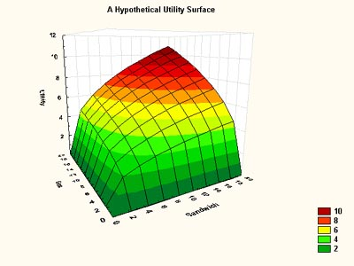

<!DOCTYPE html>
<html xmlns="http://www.w3.org/1999/xhtml" lang="" xml:lang="">
<head>

  <meta charset="utf-8" />
  <meta http-equiv="X-UA-Compatible" content="IE=edge" />
  <title>6 Utility and Choice [NS Chapter 2; 2 hours] (L2) | Intermediate Microeconomics (applied); produced for Exeter BEE2038</title>
  <meta name="description" content="BEE2038: Intermediate Microeconomics (applied)" />
  <meta name="generator" content="bookdown 0.12 and GitBook 2.6.7" />

  <meta property="og:title" content="6 Utility and Choice [NS Chapter 2; 2 hours] (L2) | Intermediate Microeconomics (applied); produced for Exeter BEE2038" />
  <meta property="og:type" content="book" />
  
  <meta property="og:image" content="i" />
  <meta property="og:description" content="BEE2038: Intermediate Microeconomics (applied)" />
  <meta name="github-repo" content="daaronr/writing_econ_research" />

  <meta name="twitter:card" content="summary" />
  <meta name="twitter:title" content="6 Utility and Choice [NS Chapter 2; 2 hours] (L2) | Intermediate Microeconomics (applied); produced for Exeter BEE2038" />
  
  <meta name="twitter:description" content="BEE2038: Intermediate Microeconomics (applied)" />
  <meta name="twitter:image" content="i" />

<meta name="author" content="Dr. David Reinstein, University of Exeter, main web page, innovationsinfundraising.org, Twitter: givingtools" />


<meta name="date" content="2019-09-17" />

  <meta name="viewport" content="width=device-width, initial-scale=1" />
  <meta name="apple-mobile-web-app-capable" content="yes" />
  <meta name="apple-mobile-web-app-status-bar-style" content="black" />
  
  
<link rel="prev" href="math-tools.html">
<link rel="next" href="demand-curves.html">
<script src="libs/jquery-2.2.3/jquery.min.js"></script>
<link href="libs/gitbook-2.6.7/css/style.css" rel="stylesheet" />
<link href="libs/gitbook-2.6.7/css/plugin-table.css" rel="stylesheet" />
<link href="libs/gitbook-2.6.7/css/plugin-bookdown.css" rel="stylesheet" />
<link href="libs/gitbook-2.6.7/css/plugin-highlight.css" rel="stylesheet" />
<link href="libs/gitbook-2.6.7/css/plugin-search.css" rel="stylesheet" />
<link href="libs/gitbook-2.6.7/css/plugin-fontsettings.css" rel="stylesheet" />


<!-- font families -->

<link href="https://fonts.googleapis.com/css?family=PT+Sans|Pacifico|Source+Sans+Pro" rel="stylesheet">

<script src="js/hideOutput.js"></script>

<!-- Mathjax -->
<script type="text/javascript" src="https://cdnjs.cloudflare.com/ajax/libs/mathjax/2.7.5/config/default.js"></script>

 <script type="text/x-mathjax-config">
      MathJax.Hub.Config({
        extensions: ["tex2jax.js", "TeX/AMSmath.js"],
        tex2jax: {inlineMath: [['$','$'], ['\\(','\\)']]},
        jax: ["input/TeX","output/CommonHTML"]
      });
      MathJax.Hub.processSectionDelay = 0;
  </script>


<!-- open review block -->

<script async defer src="https://hypothes.is/embed.js"></script>


<style type="text/css">
a.sourceLine { display: inline-block; line-height: 1.25; }
a.sourceLine { pointer-events: none; color: inherit; text-decoration: inherit; }
a.sourceLine:empty { height: 1.2em; }
.sourceCode { overflow: visible; }
code.sourceCode { white-space: pre; position: relative; }
pre.sourceCode { margin: 0; }
@media screen {
div.sourceCode { overflow: auto; }
}
@media print {
code.sourceCode { white-space: pre-wrap; }
a.sourceLine { text-indent: -1em; padding-left: 1em; }
}
pre.numberSource a.sourceLine
  { position: relative; left: -4em; }
pre.numberSource a.sourceLine::before
  { content: attr(title);
    position: relative; left: -1em; text-align: right; vertical-align: baseline;
    border: none; pointer-events: all; display: inline-block;
    -webkit-touch-callout: none; -webkit-user-select: none;
    -khtml-user-select: none; -moz-user-select: none;
    -ms-user-select: none; user-select: none;
    padding: 0 4px; width: 4em;
    color: #aaaaaa;
  }
pre.numberSource { margin-left: 3em; border-left: 1px solid #aaaaaa;  padding-left: 4px; }
div.sourceCode
  { background-color: #f8f8f8; }
@media screen {
a.sourceLine::before { text-decoration: underline; }
}
code span.al { color: #ef2929; } /* Alert */
code span.an { color: #8f5902; font-weight: bold; font-style: italic; } /* Annotation */
code span.at { color: #c4a000; } /* Attribute */
code span.bn { color: #0000cf; } /* BaseN */
code span.cf { color: #204a87; font-weight: bold; } /* ControlFlow */
code span.ch { color: #4e9a06; } /* Char */
code span.cn { color: #000000; } /* Constant */
code span.co { color: #8f5902; font-style: italic; } /* Comment */
code span.cv { color: #8f5902; font-weight: bold; font-style: italic; } /* CommentVar */
code span.do { color: #8f5902; font-weight: bold; font-style: italic; } /* Documentation */
code span.dt { color: #204a87; } /* DataType */
code span.dv { color: #0000cf; } /* DecVal */
code span.er { color: #a40000; font-weight: bold; } /* Error */
code span.ex { } /* Extension */
code span.fl { color: #0000cf; } /* Float */
code span.fu { color: #000000; } /* Function */
code span.im { } /* Import */
code span.in { color: #8f5902; font-weight: bold; font-style: italic; } /* Information */
code span.kw { color: #204a87; font-weight: bold; } /* Keyword */
code span.op { color: #ce5c00; font-weight: bold; } /* Operator */
code span.ot { color: #8f5902; } /* Other */
code span.pp { color: #8f5902; font-style: italic; } /* Preprocessor */
code span.sc { color: #000000; } /* SpecialChar */
code span.ss { color: #4e9a06; } /* SpecialString */
code span.st { color: #4e9a06; } /* String */
code span.va { color: #000000; } /* Variable */
code span.vs { color: #4e9a06; } /* VerbatimString */
code span.wa { color: #8f5902; font-weight: bold; font-style: italic; } /* Warning */
</style>

<link rel="stylesheet" href="style.css" type="text/css" />
</head>

<body>


  <div class="book without-animation with-summary font-size-2 font-family-1" data-basepath=".">

    <div class="book-summary">
      <nav role="navigation">

<ul class="summary">
<li><a href="./">Intermediate Microeconomics (applied)</a></li>

<li class="divider"></li>
<li class="chapter" data-level="1" data-path="note.html"><a href="note.html"><i class="fa fa-check"></i><b>1</b> Notes to students</a><ul>
<li class="chapter" data-level="1.1" data-path="note.html"><a href="note.html#on-this-online-resource-and-the-textbook."><i class="fa fa-check"></i><b>1.1</b> On this online resource and the textbook.</a></li>
<li class="chapter" data-level="1.2" data-path="note.html"><a href="note.html#on-this-module-exeter-bee2038---intermediate-microeconomics---for-students-not-doing-a-straight-economics-degree"><i class="fa fa-check"></i><b>1.2</b> On this module (Exeter: BEE2038 - Intermediate Microeconomics - for students not doing a straight Economics degree)</a></li>
</ul></li>
<li class="chapter" data-level="2" data-path="background.html"><a href="background.html"><i class="fa fa-check"></i><b>2</b> Background</a><ul>
<li class="chapter" data-level="2.1" data-path="background.html"><a href="background.html#course-information"><i class="fa fa-check"></i><b>2.1</b> Course Information</a></li>
<li class="chapter" data-level="2.2" data-path="background.html"><a href="background.html#outline-and-description"><i class="fa fa-check"></i><b>2.2</b> Outline and description</a></li>
</ul></li>
<li class="chapter" data-level="3" data-path="intro.html"><a href="intro.html"><i class="fa fa-check"></i><b>3</b> Introduction to the module and ‘housekeeping’</a><ul>
<li class="chapter" data-level="3.1" data-path="intro.html"><a href="intro.html#the-first-week-of-lectures-aims-to-cover"><i class="fa fa-check"></i><b>3.1</b> The first week of lectures aims to cover:</a></li>
<li class="chapter" data-level="3.2" data-path="intro.html"><a href="intro.html#first-problem-set-and-tutorial-coverage"><i class="fa fa-check"></i><b>3.2</b> First problem set and tutorial: coverage</a></li>
<li class="chapter" data-level="3.3" data-path="intro.html"><a href="intro.html#me"><i class="fa fa-check"></i><b>3.3</b> Me</a></li>
<li class="chapter" data-level="3.4" data-path="intro.html"><a href="intro.html#this-module"><i class="fa fa-check"></i><b>3.4</b> This module</a></li>
<li class="chapter" data-level="3.5" data-path="intro.html"><a href="intro.html#problem-sets"><i class="fa fa-check"></i><b>3.5</b> Problem sets</a></li>
<li class="chapter" data-level="3.6" data-path="intro.html"><a href="intro.html#feedback-on-your-highly-esteemed-but-extremely-humble-lecturer"><i class="fa fa-check"></i><b>3.6</b> Feedback on your highly-esteemed but extremely humble lecturer</a></li>
<li class="chapter" data-level="3.7" data-path="intro.html"><a href="intro.html#module-story"><i class="fa fa-check"></i><b>3.7</b> The story of this module</a></li>
<li class="chapter" data-level="3.8" data-path="intro.html"><a href="intro.html#the-big-small-question"><i class="fa fa-check"></i><b>3.8</b> The big (small) question</a></li>
<li class="chapter" data-level="3.9" data-path="intro.html"><a href="intro.html#resources"><i class="fa fa-check"></i><b>3.9</b> Resources</a></li>
<li class="chapter" data-level="3.10" data-path="intro.html"><a href="intro.html#how-to-do-well"><i class="fa fa-check"></i><b>3.10</b> How to do well</a></li>
<li class="chapter" data-level="3.11" data-path="intro.html"><a href="intro.html#fortune-cookie-wisdom"><i class="fa fa-check"></i><b>3.11</b> Fortune Cookie Wisdom</a></li>
</ul></li>
<li class="chapter" data-level="4" data-path="models.html"><a href="models.html"><i class="fa fa-check"></i><b>4</b> Economic Models [1 hour] (L1-2)</a><ul>
<li class="chapter" data-level="4.1" data-path="models.html"><a href="models.html#what-is-economics"><i class="fa fa-check"></i><b>4.1</b> What is Economics?</a></li>
<li class="chapter" data-level="4.2" data-path="models.html"><a href="models.html#why-learn-these-models"><i class="fa fa-check"></i><b>4.2</b> Why learn these models?</a></li>
<li class="chapter" data-level="4.3" data-path="models.html"><a href="models.html#economic-models"><i class="fa fa-check"></i><b>4.3</b> Economic Models</a></li>
<li class="chapter" data-level="4.4" data-path="models.html"><a href="models.html#applications"><i class="fa fa-check"></i><b>4.4</b> Applications</a></li>
<li class="chapter" data-level="4.5" data-path="models.html"><a href="models.html#basic-supply-demand-model"><i class="fa fa-check"></i><b>4.5</b> Basic Supply-Demand Model</a></li>
<li class="chapter" data-level="4.6" data-path="models.html"><a href="models.html#how-economists-verify-or-assess-theoretical-models"><i class="fa fa-check"></i><b>4.6</b> How Economists ‘Verify’ (or Assess) Theoretical Models</a></li>
<li class="chapter" data-level="4.7" data-path="models.html"><a href="models.html#positive-and-normative"><i class="fa fa-check"></i><b>4.7</b> Positive and normative</a></li>
<li class="chapter" data-level="4.8" data-path="models.html"><a href="models.html#review-questions-and-problems-from-chapter-1"><i class="fa fa-check"></i><b>4.8</b> Review questions and problems from Chapter 1</a></li>
</ul></li>
<li class="chapter" data-level="5" data-path="math-tools.html"><a href="math-tools.html"><i class="fa fa-check"></i><b>5</b> Math tools etc - Chapter 1a – coverage outline</a><ul>
<li class="chapter" data-level="5.1" data-path="math-tools.html"><a href="math-tools.html#other-maths-resources"><i class="fa fa-check"></i><b>5.1</b> Other maths resources</a></li>
<li class="chapter" data-level="5.2" data-path="math-tools.html"><a href="math-tools.html#simple-stuff"><i class="fa fa-check"></i><b>5.2</b> Simple stuff</a></li>
<li class="chapter" data-level="5.3" data-path="math-tools.html"><a href="math-tools.html#minimum-maximum-or-neither"><i class="fa fa-check"></i><b>5.3</b> Minimum, maximum, or neither?</a></li>
<li class="chapter" data-level="5.4" data-path="math-tools.html"><a href="math-tools.html#multivar-functions"><i class="fa fa-check"></i><b>5.4</b> Functions of two or more variables (multivariate functions)</a></li>
<li class="chapter" data-level="5.5" data-path="math-tools.html"><a href="math-tools.html#contourlines_math"><i class="fa fa-check"></i><b>5.5</b> Contour lines (we will come back to this later)</a></li>
<li class="chapter" data-level="5.6" data-path="math-tools.html"><a href="math-tools.html#simultaneous-equations-cover-briefly-in-lecture"><i class="fa fa-check"></i><b>5.6</b> Simultaneous equations (Cover briefly in lecture)</a></li>
<li class="chapter" data-level="5.7" data-path="math-tools.html"><a href="math-tools.html#empirical"><i class="fa fa-check"></i><b>5.7</b> Empirical microeconomics/econometrics</a></li>
<li class="chapter" data-level="5.8" data-path="math-tools.html"><a href="math-tools.html#empirical-meta-example"><i class="fa fa-check"></i><b>5.8</b> Empirical meta-example</a></li>
<li class="chapter" data-level="5.9" data-path="math-tools.html"><a href="math-tools.html#application-1a.3-changing-world-oil-prices"><i class="fa fa-check"></i><b>5.9</b> Application 1A.3: … Changing world oil prices</a></li>
<li class="chapter" data-level="5.10" data-path="math-tools.html"><a href="math-tools.html#data-and-economic-analysis"><i class="fa fa-check"></i><b>5.10</b> Data and economic analysis</a></li>
</ul></li>
<li class="chapter" data-level="6" data-path="utility-and-choice-ns-chapter-2-2-hours-l2.html"><a href="utility-and-choice-ns-chapter-2-2-hours-l2.html"><i class="fa fa-check"></i><b>6</b> Utility and Choice [NS Chapter 2; 2 hours] (L2)</a><ul>
<li class="chapter" data-level="6.1" data-path="utility-and-choice-ns-chapter-2-2-hours-l2.html"><a href="utility-and-choice-ns-chapter-2-2-hours-l2.html#some-motivation-for-these-abstract-ideas"><i class="fa fa-check"></i><b>6.1</b> Some motivation for these abstract ideas</a></li>
<li class="chapter" data-level="6.2" data-path="utility-and-choice-ns-chapter-2-2-hours-l2.html"><a href="utility-and-choice-ns-chapter-2-2-hours-l2.html#between-first-and-second-week-priority-home-study"><i class="fa fa-check"></i><b>6.2</b> Between first and second week; priority home-study</a></li>
<li class="chapter" data-level="6.3" data-path="utility-and-choice-ns-chapter-2-2-hours-l2.html"><a href="utility-and-choice-ns-chapter-2-2-hours-l2.html#lecture-2-2-hours-chapter-2-utility-and-choice-coverage-outline"><i class="fa fa-check"></i><b>6.3</b> Lecture 2 (2 hours), Chapter 2 – Utility and Choice – coverage outline</a></li>
<li class="chapter" data-level="6.4" data-path="utility-and-choice-ns-chapter-2-2-hours-l2.html"><a href="utility-and-choice-ns-chapter-2-2-hours-l2.html#utility"><i class="fa fa-check"></i><b>6.4</b> Utility</a></li>
<li class="chapter" data-level="6.5" data-path="utility-and-choice-ns-chapter-2-2-hours-l2.html"><a href="utility-and-choice-ns-chapter-2-2-hours-l2.html#utility-from-two-goods"><i class="fa fa-check"></i><b>6.5</b> Utility from two goods</a></li>
<li class="chapter" data-level="6.6" data-path="utility-and-choice-ns-chapter-2-2-hours-l2.html"><a href="utility-and-choice-ns-chapter-2-2-hours-l2.html#measuring-and-comparing-utilities"><i class="fa fa-check"></i><b>6.6</b> Measuring and comparing utilities</a></li>
<li class="chapter" data-level="6.7" data-path="utility-and-choice-ns-chapter-2-2-hours-l2.html"><a href="utility-and-choice-ns-chapter-2-2-hours-l2.html#assumptions-about-preferences-axioms"><i class="fa fa-check"></i><b>6.7</b> Assumptions about preferences (‘axioms’)</a></li>
<li class="chapter" data-level="6.8" data-path="utility-and-choice-ns-chapter-2-2-hours-l2.html"><a href="utility-and-choice-ns-chapter-2-2-hours-l2.html#voluntary-trades-and-indifference-curves"><i class="fa fa-check"></i><b>6.8</b> Voluntary trades and indifference curves</a></li>
<li class="chapter" data-level="6.9" data-path="utility-and-choice-ns-chapter-2-2-hours-l2.html"><a href="utility-and-choice-ns-chapter-2-2-hours-l2.html#marginal-rate-of-substitution-mrs-absolute-value-of-slope-of-indifference-curve"><i class="fa fa-check"></i><b>6.9</b> Marginal rate of substitution (MRS): Absolute value of slope of indifference curve</a></li>
<li class="chapter" data-level="6.10" data-path="utility-and-choice-ns-chapter-2-2-hours-l2.html"><a href="utility-and-choice-ns-chapter-2-2-hours-l2.html#illustrating-particular-preferences"><i class="fa fa-check"></i><b>6.10</b> Illustrating particular preferences</a></li>
<li class="chapter" data-level="6.11" data-path="utility-and-choice-ns-chapter-2-2-hours-l2.html"><a href="utility-and-choice-ns-chapter-2-2-hours-l2.html#app-2.3-product-positioning-in-marketing-not-covered-in-lecture-read-on-your-own"><i class="fa fa-check"></i><b>6.11</b> App 2.3: Product positioning in marketing (not covered in lecture, read on your own)</a></li>
<li class="chapter" data-level="6.12" data-path="utility-and-choice-ns-chapter-2-2-hours-l2.html"><a href="utility-and-choice-ns-chapter-2-2-hours-l2.html#perfect-sub-comp"><i class="fa fa-check"></i><b>6.12</b> Definitions: Perfect substitutes and complements</a></li>
<li class="chapter" data-level="6.13" data-path="utility-and-choice-ns-chapter-2-2-hours-l2.html"><a href="utility-and-choice-ns-chapter-2-2-hours-l2.html#choices-are-subject-to-constraints"><i class="fa fa-check"></i><b>6.13</b> Choices are subject to constraints</a></li>
<li class="chapter" data-level="6.14" data-path="utility-and-choice-ns-chapter-2-2-hours-l2.html"><a href="utility-and-choice-ns-chapter-2-2-hours-l2.html#utility-maximization"><i class="fa fa-check"></i><b>6.14</b> Utility maximization</a></li>
<li class="chapter" data-level="6.15" data-path="utility-and-choice-ns-chapter-2-2-hours-l2.html"><a href="utility-and-choice-ns-chapter-2-2-hours-l2.html#note-on-corner-solutions"><i class="fa fa-check"></i><b>6.15</b> Note on ‘corner solutions’</a></li>
<li class="chapter" data-level="6.16" data-path="utility-and-choice-ns-chapter-2-2-hours-l2.html"><a href="utility-and-choice-ns-chapter-2-2-hours-l2.html#app-2.4-ticket-scalping"><i class="fa fa-check"></i><b>6.16</b> App 2.4: ticket scalping</a></li>
<li class="chapter" data-level="6.17" data-path="utility-and-choice-ns-chapter-2-2-hours-l2.html"><a href="utility-and-choice-ns-chapter-2-2-hours-l2.html#app-2.5-whats-a-rich-uncles-promise-worth-read-this-at-home."><i class="fa fa-check"></i><b>6.17</b> App 2.5: What’s a rich uncle’s promise worth? (Read this at home.)</a></li>
<li class="chapter" data-level="6.18" data-path="utility-and-choice-ns-chapter-2-2-hours-l2.html"><a href="utility-and-choice-ns-chapter-2-2-hours-l2.html#using-the-model-of-choice"><i class="fa fa-check"></i><b>6.18</b> Using the model of choice</a></li>
<li class="chapter" data-level="6.19" data-path="utility-and-choice-ns-chapter-2-2-hours-l2.html"><a href="utility-and-choice-ns-chapter-2-2-hours-l2.html#algebraicnumerical-examples"><i class="fa fa-check"></i><b>6.19</b> Algebraic/numerical examples</a></li>
<li class="chapter" data-level="6.20" data-path="utility-and-choice-ns-chapter-2-2-hours-l2.html"><a href="utility-and-choice-ns-chapter-2-2-hours-l2.html#tutorial-problems-from-chapter-2-see-vle"><i class="fa fa-check"></i><b>6.20</b> Tutorial problems from chapter 2: see VLE</a></li>
</ul></li>
<li class="chapter" data-level="7" data-path="demand-curves.html"><a href="demand-curves.html"><i class="fa fa-check"></i><b>7</b> (Chapter 3) Demand Curves [2 hours] (L3)</a><ul>
<li class="chapter" data-level="7.1" data-path="demand-curves.html"><a href="demand-curves.html#lecture-3-chapter-3-demand-curves-coverage-outline"><i class="fa fa-check"></i><b>7.1</b> Lecture 3 (Chapter 3): Demand Curves – coverage outline</a></li>
<li class="chapter" data-level="7.2" data-path="demand-curves.html"><a href="demand-curves.html#demand-functions"><i class="fa fa-check"></i><b>7.2</b> Demand functions</a></li>
<li class="chapter" data-level="7.3" data-path="demand-curves.html"><a href="demand-curves.html#response-to-income-changes"><i class="fa fa-check"></i><b>7.3</b> Response to income changes</a></li>
<li class="chapter" data-level="7.4" data-path="demand-curves.html"><a href="demand-curves.html#substitution-and-income-effects-from-a-fall-or-rise-in-price"><i class="fa fa-check"></i><b>7.4</b> Substitution and income effects from a fall (or rise) in price</a></li>
<li class="chapter" data-level="7.5" data-path="demand-curves.html"><a href="demand-curves.html#different-substitution-effects-of-a-price-change"><i class="fa fa-check"></i><b>7.5</b> Different substitution effects of a price change</a></li>
<li class="chapter" data-level="7.6" data-path="demand-curves.html"><a href="demand-curves.html#the-legendary-giffen-good"><i class="fa fa-check"></i><b>7.6</b> The (legendary?) Giffen good</a></li>
<li class="chapter" data-level="7.7" data-path="demand-curves.html"><a href="demand-curves.html#second-lecture-on-demand-what-is-this"><i class="fa fa-check"></i><b>7.7</b> Second lecture on demand … WHAT is this????!!</a></li>
<li class="chapter" data-level="7.8" data-path="demand-curves.html"><a href="demand-curves.html#recap"><i class="fa fa-check"></i><b>7.8</b> … Recap</a></li>
<li class="chapter" data-level="7.9" data-path="demand-curves.html"><a href="demand-curves.html#goals-of-this-chunk-demand-part-2"><i class="fa fa-check"></i><b>7.9</b> Goals of this chunk (demand part 2)</a></li>
<li class="chapter" data-level="7.10" data-path="demand-curves.html"><a href="demand-curves.html#app-3.2-the-cpi-and-its-biases"><i class="fa fa-check"></i><b>7.10</b> App 3.2: The CPI and its biases</a></li>
<li class="chapter" data-level="7.11" data-path="demand-curves.html"><a href="demand-curves.html#the-lump-sum-principle"><i class="fa fa-check"></i><b>7.11</b> The Lump-Sum Principle</a></li>
<li class="chapter" data-level="7.12" data-path="demand-curves.html"><a href="demand-curves.html#changes-in-the-price-of-another-good"><i class="fa fa-check"></i><b>7.12</b> Changes in the Price of Another Good</a></li>
<li class="chapter" data-level="7.13" data-path="demand-curves.html"><a href="demand-curves.html#individual-demand-curves"><i class="fa fa-check"></i><b>7.13</b> Individual demand curves</a></li>
<li class="chapter" data-level="7.14" data-path="demand-curves.html"><a href="demand-curves.html#shifts-in-an-individuals-demand-curve"><i class="fa fa-check"></i><b>7.14</b> Shifts in an individual’s demand curve</a></li>
<li class="chapter" data-level="7.15" data-path="demand-curves.html"><a href="demand-curves.html#consumer-surplus"><i class="fa fa-check"></i><b>7.15</b> Consumer surplus</a></li>
<li class="chapter" data-level="7.16" data-path="demand-curves.html"><a href="demand-curves.html#shifts-in-the-market-demand-curve"><i class="fa fa-check"></i><b>7.16</b> Shifts in the Market Demand Curve</a></li>
<li class="chapter" data-level="7.17" data-path="demand-curves.html"><a href="demand-curves.html#elasticities"><i class="fa fa-check"></i><b>7.17</b> Elasticities</a></li>
<li class="chapter" data-level="7.18" data-path="demand-curves.html"><a href="demand-curves.html#price-elasticity-of-demand"><i class="fa fa-check"></i><b>7.18</b> Price elasticity of demand</a></li>
<li class="chapter" data-level="7.19" data-path="demand-curves.html"><a href="demand-curves.html#examples-from-the-headlines"><i class="fa fa-check"></i><b>7.19</b> Examples from the headlines</a></li>
<li class="chapter" data-level="7.20" data-path="demand-curves.html"><a href="demand-curves.html#next-bits-on-price-elasticity-of-demand"><i class="fa fa-check"></i><b>7.20</b> Next bits on price elasticity of demand</a></li>
<li class="chapter" data-level="7.21" data-path="demand-curves.html"><a href="demand-curves.html#income-elasticity-of-demand"><i class="fa fa-check"></i><b>7.21</b> Income elasticity of demand</a></li>
<li class="chapter" data-level="7.22" data-path="demand-curves.html"><a href="demand-curves.html#rest-of-chapter-3"><i class="fa fa-check"></i><b>7.22</b> Rest of chapter 3</a></li>
<li class="chapter" data-level="7.23" data-path="demand-curves.html"><a href="demand-curves.html#tutorial-and-suggested-problems-from-chapter-3"><i class="fa fa-check"></i><b>7.23</b> Tutorial and suggested problems from chapter 3</a></li>
</ul></li>
<li class="chapter" data-level="8" data-path="production-costs.html"><a href="production-costs.html"><i class="fa fa-check"></i><b>8</b> Production and costs (brief coverage) [30 min] (L4)</a><ul>
<li class="chapter" data-level="8.1" data-path="production-costs.html"><a href="production-costs.html#lecture-30-min---production-and-costs-brief-treatment-coverage"><i class="fa fa-check"></i><b>8.1</b> Lecture (30 min) - Production and costs (brief treatment: coverage)</a></li>
<li class="chapter" data-level="8.2" data-path="production-costs.html"><a href="production-costs.html#the-firms-production-function"><i class="fa fa-check"></i><b>8.2</b> The Firm’s Production function</a></li>
<li class="chapter" data-level="8.3" data-path="production-costs.html"><a href="production-costs.html#returns-to-scale"><i class="fa fa-check"></i><b>8.3</b> Returns to scale</a></li>
<li class="chapter" data-level="8.4" data-path="production-costs.html"><a href="production-costs.html#types-of-costs-basic-cost-concepts"><i class="fa fa-check"></i><b>8.4</b> Types of costs (‘Basic cost concepts’)</a></li>
</ul></li>
<li class="chapter" data-level="9" data-path="profit-maximisation-and-supply-ns-ch-8-1-hour.html"><a href="profit-maximisation-and-supply-ns-ch-8-1-hour.html"><i class="fa fa-check"></i><b>9</b> Profit maximisation and supply [NS Ch 8 (*)] [1 hour]</a><ul>
<li class="chapter" data-level="9.1" data-path="profit-maximisation-and-supply-ns-ch-8-1-hour.html"><a href="profit-maximisation-and-supply-ns-ch-8-1-hour.html#lecture-1-hour---profit-maximisation-and-supply---coverage"><i class="fa fa-check"></i><b>9.1</b> Lecture (1 hour) - Profit maximisation and supply - coverage</a></li>
<li class="chapter" data-level="9.2" data-path="profit-maximisation-and-supply-ns-ch-8-1-hour.html"><a href="profit-maximisation-and-supply-ns-ch-8-1-hour.html#important-aside-what-are-firms-and-why-do-they-exist"><i class="fa fa-check"></i><b>9.2</b> Important aside: What are ‘firms’ and why do they exist?</a></li>
<li class="chapter" data-level="9.3" data-path="profit-maximisation-and-supply-ns-ch-8-1-hour.html"><a href="profit-maximisation-and-supply-ns-ch-8-1-hour.html#profit-maximisation"><i class="fa fa-check"></i><b>9.3</b> Profit-maximisation</a></li>
<li class="chapter" data-level="9.4" data-path="profit-maximisation-and-supply-ns-ch-8-1-hour.html"><a href="profit-maximisation-and-supply-ns-ch-8-1-hour.html#mrmc-condition-for-price-taking-firm"><i class="fa fa-check"></i><b>9.4</b> MR=mc condition for price-taking firm</a></li>
<li class="chapter" data-level="9.5" data-path="profit-maximisation-and-supply-ns-ch-8-1-hour.html"><a href="profit-maximisation-and-supply-ns-ch-8-1-hour.html#supply-decisions-of-a-price-taking-firm"><i class="fa fa-check"></i><b>9.5</b> Supply decisions of a price-taking firm</a></li>
<li class="chapter" data-level="9.6" data-path="profit-maximisation-and-supply-ns-ch-8-1-hour.html"><a href="profit-maximisation-and-supply-ns-ch-8-1-hour.html#suggested-practice-problems-from-nicholson-and-snyder-chapter-8-12th-ed"><i class="fa fa-check"></i><b>9.6</b> Suggested practice problems from Nicholson and Snyder Chapter 8 (12th ed)</a></li>
</ul></li>
<li class="chapter" data-level="10" data-path="perfect-competition.html"><a href="perfect-competition.html"><i class="fa fa-check"></i><b>10</b> Perfect competition in a single market [NS Ch 9 (*)] [1 hour] (L7)</a><ul>
<li class="chapter" data-level="10.1" data-path="perfect-competition.html"><a href="perfect-competition.html#lecture-1-hour---perfect-competition-in-a-single-market---coverage"><i class="fa fa-check"></i><b>10.1</b> Lecture (1 hour) - Perfect competition in a single market - coverage</a></li>
<li class="chapter" data-level="10.2" data-path="perfect-competition.html"><a href="perfect-competition.html#sr-supply"><i class="fa fa-check"></i><b>10.2</b> SR supply</a></li>
<li class="chapter" data-level="10.3" data-path="perfect-competition.html"><a href="perfect-competition.html#sr-price-determination"><i class="fa fa-check"></i><b>10.3</b> SR Price determination</a></li>
<li class="chapter" data-level="10.4" data-path="perfect-competition.html"><a href="perfect-competition.html#illustration-of-sr-price-determination"><i class="fa fa-check"></i><b>10.4</b> Illustration of SR price determination</a></li>
<li class="chapter" data-level="10.5" data-path="perfect-competition.html"><a href="perfect-competition.html#shifts-in-s-and-d-curves"><i class="fa fa-check"></i><b>10.5</b> Shifts in S and D curves</a></li>
<li class="chapter" data-level="10.6" data-path="perfect-competition.html"><a href="perfect-competition.html#the-long-run"><i class="fa fa-check"></i><b>10.6</b> The Long run</a></li>
<li class="chapter" data-level="10.7" data-path="perfect-competition.html"><a href="perfect-competition.html#long-run-lr-supply"><i class="fa fa-check"></i><b>10.7</b> Long Run (LR) Supply</a></li>
<li class="chapter" data-level="10.8" data-path="perfect-competition.html"><a href="perfect-competition.html#consumer-and-producer-surplus-efficiency"><i class="fa fa-check"></i><b>10.8</b> Consumer and producer surplus, efficiency</a></li>
<li class="chapter" data-level="10.9" data-path="perfect-competition.html"><a href="perfect-competition.html#suggested-practice-problems-from-nicholson-and-snyder-chapter-9-12th-ed"><i class="fa fa-check"></i><b>10.9</b> Suggested practice problems from Nicholson and Snyder Chapter 9 (12th ed)</a></li>
<li class="chapter" data-level="10.10" data-path="perfect-competition.html"><a href="perfect-competition.html#important-caveat"><i class="fa fa-check"></i><b>10.10</b> Important caveat</a></li>
</ul></li>
<li class="chapter" data-level="11" data-path="key-principles-for-efficiency-and-general-equilibrium.html"><a href="key-principles-for-efficiency-and-general-equilibrium.html"><i class="fa fa-check"></i><b>11</b> Key principles for efficiency and ‘general’ equilibrium</a><ul>
<li class="chapter" data-level="11.1" data-path="key-principles-for-efficiency-and-general-equilibrium.html"><a href="key-principles-for-efficiency-and-general-equilibrium.html#general-equilibrium-and-efficiency-coverage"><i class="fa fa-check"></i><b>11.1</b> General equilibrium and efficiency: Coverage</a></li>
<li class="chapter" data-level="11.2" data-path="key-principles-for-efficiency-and-general-equilibrium.html"><a href="key-principles-for-efficiency-and-general-equilibrium.html#edgeworth-box-scavenger-hunt"><i class="fa fa-check"></i><b>11.2</b> Edgeworth box scavenger hunt</a></li>
<li class="chapter" data-level="11.3" data-path="key-principles-for-efficiency-and-general-equilibrium.html"><a href="key-principles-for-efficiency-and-general-equilibrium.html#some-key-things-for-midterm-recap"><i class="fa fa-check"></i><b>11.3</b> Some key things for midterm (recap)</a></li>
<li class="chapter" data-level="11.4" data-path="key-principles-for-efficiency-and-general-equilibrium.html"><a href="key-principles-for-efficiency-and-general-equilibrium.html#note-we-are-skipping-market-failures-asymmetric-information-this-is-not-covered-in-this-module"><i class="fa fa-check"></i><b>11.4</b> Note: we are skipping ‘Market Failures: Asymmetric Information’; this is not covered in this module</a></li>
</ul></li>
<li class="chapter" data-level="12" data-path="market-failure.html"><a href="market-failure.html"><i class="fa fa-check"></i><b>12</b> Market failure (One case: Public goods) [1 hour] (L8)</a><ul>
<li class="chapter" data-level="12.1" data-path="market-failure.html"><a href="market-failure.html#market-failures---public-goods-coverage"><i class="fa fa-check"></i><b>12.1</b> Market failures - public goods, coverage</a></li>
<li class="chapter" data-level="12.2" data-path="market-failure.html"><a href="market-failure.html#market-failures"><i class="fa fa-check"></i><b>12.2</b> Market failures</a></li>
<li class="chapter" data-level="12.3" data-path="market-failure.html"><a href="market-failure.html#public-goods-attributes-categories"><i class="fa fa-check"></i><b>12.3</b> Public Goods (attributes, categories)</a></li>
<li class="chapter" data-level="12.4" data-path="market-failure.html"><a href="market-failure.html#public-goods-and-market-failure"><i class="fa fa-check"></i><b>12.4</b> Public Goods and Market Failure</a></li>
<li class="chapter" data-level="12.5" data-path="market-failure.html"><a href="market-failure.html#solutions-to-the-public-goods-problem"><i class="fa fa-check"></i><b>12.5</b> Solutions to the Public Goods Problem</a></li>
<li class="chapter" data-level="12.6" data-path="market-failure.html"><a href="market-failure.html#food-for-thought-discussion"><i class="fa fa-check"></i><b>12.6</b> Food for thought, discussion</a></li>
<li class="chapter" data-level="12.7" data-path="market-failure.html"><a href="market-failure.html#revealing-the-demand-for-public-goods-brief"><i class="fa fa-check"></i><b>12.7</b> Revealing the Demand for Public Goods (brief)</a></li>
<li class="chapter" data-level="12.8" data-path="market-failure.html"><a href="market-failure.html#lab-evidence-on-voluntary-provision-of-public-goods"><i class="fa fa-check"></i><b>12.8</b> Lab evidence on <em>voluntary</em> provision of Public Goods</a></li>
<li class="chapter" data-level="12.9" data-path="market-failure.html"><a href="market-failure.html#today-i-learned-til"><i class="fa fa-check"></i><b>12.9</b> Today I learned (‘TIL’)</a></li>
<li class="chapter" data-level="12.10" data-path="market-failure.html"><a href="market-failure.html#suggested-practice-problems-from-nicholson-and-snyder-chapter-16-12th-ed"><i class="fa fa-check"></i><b>12.10</b> Suggested practice problems from Nicholson and Snyder Chapter 16 (12th ed)</a></li>
</ul></li>
<li class="chapter" data-level="13" data-path="monopolies-pd.html"><a href="monopolies-pd.html"><i class="fa fa-check"></i><b>13</b> Monopolies and price discrimination [1-2 hours] (L9)</a><ul>
<li class="chapter" data-level="13.1" data-path="monopolies-pd.html"><a href="monopolies-pd.html#barriers-to-entry"><i class="fa fa-check"></i><b>13.1</b> Barriers to entry</a></li>
<li class="chapter" data-level="13.2" data-path="monopolies-pd.html"><a href="monopolies-pd.html#monopoly-profit-maximisation"><i class="fa fa-check"></i><b>13.2</b> Monopoly profit-maximisation</a></li>
<li class="chapter" data-level="13.3" data-path="monopolies-pd.html"><a href="monopolies-pd.html#skip-no-supply-curve-for-a-monopoly"><i class="fa fa-check"></i><b>13.3</b> Skip: ‘no supply curve for a monopoly’</a></li>
<li class="chapter" data-level="13.4" data-path="monopolies-pd.html"><a href="monopolies-pd.html#the-deadweight-loss-of-monopoly"><i class="fa fa-check"></i><b>13.4</b> The deadweight loss of monopoly</a></li>
<li class="chapter" data-level="13.5" data-path="monopolies-pd.html"><a href="monopolies-pd.html#price-discrimination"><i class="fa fa-check"></i><b>13.5</b> Price discrimination</a></li>
<li class="chapter" data-level="13.6" data-path="monopolies-pd.html"><a href="monopolies-pd.html#natural-monopolies-and-regulation-very-brief"><i class="fa fa-check"></i><b>13.6</b> Natural monopolies and regulation (very brief!)</a></li>
</ul></li>
<li class="chapter" data-level="14" data-path="uncertainty.html"><a href="uncertainty.html"><i class="fa fa-check"></i><b>14</b> Uncertainty (with a bit of finance) [(2 hours), NS Chapter 4] (L10)</a><ul>
<li class="chapter" data-level="14.1" data-path="uncertainty.html"><a href="uncertainty.html#lecture-2-hours---chapter-4-coverage-outline"><i class="fa fa-check"></i><b>14.1</b> Lecture (2 hours) - Chapter 4 coverage outline</a></li>
<li class="chapter" data-level="14.2" data-path="uncertainty.html"><a href="uncertainty.html#whats-up-with-uncertainty"><i class="fa fa-check"></i><b>14.2</b> What’s up with uncertainty?</a></li>
<li class="chapter" data-level="14.3" data-path="uncertainty.html"><a href="uncertainty.html#probability-concepts-a-quick-review"><i class="fa fa-check"></i><b>14.3</b> Probability concepts: a quick review</a></li>
<li class="chapter" data-level="14.4" data-path="uncertainty.html"><a href="uncertainty.html#example-experimental-measures-of-risk-attitudes"><i class="fa fa-check"></i><b>14.4</b> Example: experimental measures of risk attitudes</a></li>
<li class="chapter" data-level="14.5" data-path="uncertainty.html"><a href="uncertainty.html#expected-utility"><i class="fa fa-check"></i><b>14.5</b> Expected utility</a></li>
<li class="chapter" data-level="14.6" data-path="uncertainty.html"><a href="uncertainty.html#risk-aversion-graphical-depiction"><i class="fa fa-check"></i><b>14.6</b> Risk aversion: graphical depiction</a></li>
<li class="chapter" data-level="14.7" data-path="uncertainty.html"><a href="uncertainty.html#ways-of-reducing-risk-insurance"><i class="fa fa-check"></i><b>14.7</b> Ways of reducing risk: Insurance</a></li>
<li class="chapter" data-level="14.8" data-path="uncertainty.html"><a href="uncertainty.html#ways-of-reducing-risk-diversification"><i class="fa fa-check"></i><b>14.8</b> Ways of reducing risk: Diversification</a></li>
<li class="chapter" data-level="14.9" data-path="uncertainty.html"><a href="uncertainty.html#flexibility-and-options-contracts"><i class="fa fa-check"></i><b>14.9</b> Flexibility and options contracts</a></li>
<li class="chapter" data-level="14.10" data-path="uncertainty.html"><a href="uncertainty.html#pricing-of-risk-and-assets-in-financial-markets"><i class="fa fa-check"></i><b>14.10</b> Pricing of risk (and assets) in financial markets</a></li>
<li class="chapter" data-level="14.11" data-path="uncertainty.html"><a href="uncertainty.html#not-covered-two-state-model"><i class="fa fa-check"></i><b>14.11</b> Not covered: two state model</a></li>
<li class="chapter" data-level="14.12" data-path="uncertainty.html"><a href="uncertainty.html#suggested-practice-problems-see-problem-set"><i class="fa fa-check"></i><b>14.12</b> Suggested practice problems: see problem set</a></li>
</ul></li>
<li class="chapter" data-level="15" data-path="game-theory.html"><a href="game-theory.html"><i class="fa fa-check"></i><b>15</b> Game Theory [(2-3 hours), NS Chapter 5 and additional concepts/readings below] (L11)</a><ul>
<li class="chapter" data-level="15.1" data-path="game-theory.html"><a href="game-theory.html#lecture-2-3-hours---game-theory-coverage-outline"><i class="fa fa-check"></i><b>15.1</b> Lecture (2-3 hours) - Game theory; coverage outline</a></li>
<li class="chapter" data-level="15.2" data-path="game-theory.html"><a href="game-theory.html#basic-concepts-strategic-interaction-elements-of-a-game"><i class="fa fa-check"></i><b>15.2</b> Basic concepts (strategic interaction, elements of a game))</a></li>
<li class="chapter" data-level="15.3" data-path="game-theory.html"><a href="game-theory.html#some-examples"><i class="fa fa-check"></i><b>15.3</b> Some examples</a></li>
<li class="chapter" data-level="15.4" data-path="game-theory.html"><a href="game-theory.html#illustrating-games"><i class="fa fa-check"></i><b>15.4</b> Illustrating Games</a></li>
<li class="chapter" data-level="15.5" data-path="game-theory.html"><a href="game-theory.html#dominant-dominated-strategies-and-rationalizability"><i class="fa fa-check"></i><b>15.5</b> Dominant, dominated strategies and rationalizability</a></li>
<li class="chapter" data-level="15.6" data-path="game-theory.html"><a href="game-theory.html#equilibrium"><i class="fa fa-check"></i><b>15.6</b> Equilibrium</a></li>
<li class="chapter" data-level="15.7" data-path="game-theory.html"><a href="game-theory.html#two-ways-to-find-the-nash-equilibrium-ne"><i class="fa fa-check"></i><b>15.7</b> Two ways to find the Nash equilibrium (NE)</a></li>
<li class="chapter" data-level="15.8" data-path="game-theory.html"><a href="game-theory.html#relationship-between-dominant-strategies-rationalisability-and-nash-equilibrium"><i class="fa fa-check"></i><b>15.8</b> Relationship between dominant strategies, rationalisability, and Nash equilibrium</a></li>
<li class="chapter" data-level="15.9" data-path="game-theory.html"><a href="game-theory.html#efficiency-and-the-pd-redux"><i class="fa fa-check"></i><b>15.9</b> Efficiency and the PD (redux)</a></li>
<li class="chapter" data-level="15.10" data-path="game-theory.html"><a href="game-theory.html#coordination-and-anti-coordination-games"><i class="fa fa-check"></i><b>15.10</b> Coordination and anti-coordination games</a></li>
<li class="chapter" data-level="15.11" data-path="game-theory.html"><a href="game-theory.html#mixed-strategies"><i class="fa fa-check"></i><b>15.11</b> Mixed strategies</a></li>
<li class="chapter" data-level="15.12" data-path="game-theory.html"><a href="game-theory.html#how-do-you-solve-a-problem-like-multiple-equilibria"><i class="fa fa-check"></i><b>15.12</b> How do you solve a problem like multiple-equilibria?</a></li>
<li class="chapter" data-level="15.13" data-path="game-theory.html"><a href="game-theory.html#sequential-games"><i class="fa fa-check"></i><b>15.13</b> Sequential Games</a></li>
<li class="chapter" data-level="15.14" data-path="game-theory.html"><a href="game-theory.html#repeated-games-definite-time-horizon"><i class="fa fa-check"></i><b>15.14</b> Repeated games: definite time horizon</a></li>
<li class="chapter" data-level="15.15" data-path="game-theory.html"><a href="game-theory.html#experimental-evidence-what-is-a-laboratory-experiment-in-economics"><i class="fa fa-check"></i><b>15.15</b> Experimental evidence: What is a laboratory experiment in Economics?</a></li>
<li class="chapter" data-level="15.16" data-path="game-theory.html"><a href="game-theory.html#laboratory-evidence-1-prisoners-dilemmas"><i class="fa fa-check"></i><b>15.16</b> Laboratory evidence 1: Prisoners’ dilemmas</a></li>
<li class="chapter" data-level="15.17" data-path="game-theory.html"><a href="game-theory.html#laboratory-evidence-2-ultimatum-game"><i class="fa fa-check"></i><b>15.17</b> Laboratory evidence 2: Ultimatum game</a></li>
<li class="chapter" data-level="15.18" data-path="game-theory.html"><a href="game-theory.html#issues-in-lab-experiments"><i class="fa fa-check"></i><b>15.18</b> Issues in lab experiments</a></li>
<li class="chapter" data-level="15.19" data-path="game-theory.html"><a href="game-theory.html#issues-in-lab-experiments-external-generalisability"><i class="fa fa-check"></i><b>15.19</b> Issues in lab experiments: External generalisability</a></li>
</ul></li>
<li class="chapter" data-level="16" data-path="behavioural-economics-1-2-hours-week-12.html"><a href="behavioural-economics-1-2-hours-week-12.html"><i class="fa fa-check"></i><b>16</b> Behavioural economics [1-2 hours] (week 12)</a><ul>
<li class="chapter" data-level="16.1" data-path="behavioural-economics-1-2-hours-week-12.html"><a href="behavioural-economics-1-2-hours-week-12.html#behavioural-economics"><i class="fa fa-check"></i><b>16.1</b> Behavioural economics</a></li>
<li class="chapter" data-level="16.2" data-path="behavioural-economics-1-2-hours-week-12.html"><a href="behavioural-economics-1-2-hours-week-12.html#neoclassical-versus-behavioural-economics"><i class="fa fa-check"></i><b>16.2</b> Neoclassical versus Behavioural economics</a></li>
<li class="chapter" data-level="16.3" data-path="behavioural-economics-1-2-hours-week-12.html"><a href="behavioural-economics-1-2-hours-week-12.html#classical-economists-are-not-naive"><i class="fa fa-check"></i><b>16.3</b> Classical economists are not naïve</a></li>
<li class="chapter" data-level="16.4" data-path="behavioural-economics-1-2-hours-week-12.html"><a href="behavioural-economics-1-2-hours-week-12.html#behavioural-economics-1"><i class="fa fa-check"></i><b>16.4</b> Behavioural Economics</a></li>
<li class="chapter" data-level="16.5" data-path="behavioural-economics-1-2-hours-week-12.html"><a href="behavioural-economics-1-2-hours-week-12.html#modern-consensusentente"><i class="fa fa-check"></i><b>16.5</b> Modern consensus/entente</a></li>
<li class="chapter" data-level="16.6" data-path="behavioural-economics-1-2-hours-week-12.html"><a href="behavioural-economics-1-2-hours-week-12.html#limits-to-human-decision-making-an-overview"><i class="fa fa-check"></i><b>16.6</b> Limits to Human Decision Making: An Overview</a></li>
<li class="chapter" data-level="16.7" data-path="behavioural-economics-1-2-hours-week-12.html"><a href="behavioural-economics-1-2-hours-week-12.html#limited-cognitive-ability"><i class="fa fa-check"></i><b>16.7</b> Limited cognitive ability</a></li>
<li class="chapter" data-level="16.8" data-path="behavioural-economics-1-2-hours-week-12.html"><a href="behavioural-economics-1-2-hours-week-12.html#allais-paradox"><i class="fa fa-check"></i><b>16.8</b> Allais paradox</a></li>
<li class="chapter" data-level="16.9" data-path="behavioural-economics-1-2-hours-week-12.html"><a href="behavioural-economics-1-2-hours-week-12.html#explaining-the-above-paradoxes-with-prospect-theory"><i class="fa fa-check"></i><b>16.9</b> Explaining the above paradoxes with prospect theory</a></li>
<li class="chapter" data-level="16.10" data-path="behavioural-economics-1-2-hours-week-12.html"><a href="behavioural-economics-1-2-hours-week-12.html#limited-willpower-and-hyperbolic-discounting"><i class="fa fa-check"></i><b>16.10</b> Limited willpower and ‘hyperbolic discounting’</a></li>
<li class="chapter" data-level="16.11" data-path="behavioural-economics-1-2-hours-week-12.html"><a href="behavioural-economics-1-2-hours-week-12.html#altruism-and-fairness"><i class="fa fa-check"></i><b>16.11</b> Altruism and fairness</a></li>
<li class="chapter" data-level="16.12" data-path="behavioural-economics-1-2-hours-week-12.html"><a href="behavioural-economics-1-2-hours-week-12.html#supplemental-reading-evidence-on-the-ultimatum-game"><i class="fa fa-check"></i><b>16.12</b> Supplemental (reading): Evidence on the Ultimatum Game</a></li>
<li class="chapter" data-level="16.13" data-path="behavioural-economics-1-2-hours-week-12.html"><a href="behavioural-economics-1-2-hours-week-12.html#ultimatum-game-theoretical-predictions"><i class="fa fa-check"></i><b>16.13</b> Ultimatum game: theoretical predictions</a></li>
<li class="chapter" data-level="16.14" data-path="behavioural-economics-1-2-hours-week-12.html"><a href="behavioural-economics-1-2-hours-week-12.html#application-give-if-you-win-eu-vs.-prospect-theory"><i class="fa fa-check"></i><b>16.14</b> Application: Give-if-you-win (EU vs. Prospect theory)</a></li>
<li class="chapter" data-level="16.15" data-path="behavioural-economics-1-2-hours-week-12.html"><a href="behavioural-economics-1-2-hours-week-12.html#suggested-practice-problems-from-nicholson-and-snyder-chapter-17-12th-ed"><i class="fa fa-check"></i><b>16.15</b> Suggested practice problems from Nicholson and Snyder chapter 17 (12th ed)</a></li>
<li class="chapter" data-level="16.16" data-path="behavioural-economics-1-2-hours-week-12.html"><a href="behavioural-economics-1-2-hours-week-12.html#behavioral-revision"><i class="fa fa-check"></i><b>16.16</b> Revisiony lecture: Behavioral economics (L13)</a></li>
</ul></li>
<li class="divider"></li>
<li><a href="https://bookdown.org" target="_blank">Published with bookdown</a></li>

</ul>

      </nav>
    </div>

    <div class="book-body">
      <div class="body-inner">
        <div class="book-header" role="navigation">
          <h1>
            <i class="fa fa-circle-o-notch fa-spin"></i><a href="./">Intermediate Microeconomics (applied); produced for Exeter BEE2038</a>
          </h1>
        </div>

        <div class="page-wrapper" tabindex="-1" role="main">
          <div class="page-inner">

            <section class="normal" id="section-">
<div id="utility-and-choice-ns-chapter-2-2-hours-l2" class="section level1">
<h1><span class="header-section-number">6</span> Utility and Choice [NS Chapter 2; 2 hours] (L2)</h1>
<p><font color='gray'>We now consider the very very fundamental building blocks behind the (in)famous ‘neoclassical economics model.’ If you accept these ‘axioms’ nearly everything flows from it!</font></p>
<div id="some-motivation-for-these-abstract-ideas" class="section level2">
<h2><span class="header-section-number">6.1</span> Some motivation for these abstract ideas</h2>
<p><font color='blue'>Consider a decision you recently made? Define this decision clearly; what were the options? How do you think you decided among these options?</font></p>
<p>What did this depend on? Would other people in your place have made the same decision?
If you got amnesia and forgot what you decided and then were in the same situation again. Do you think you’d make the same decision?</p>
<p></p>
<p><br> 
Suppose I asked you</p>
<p>‘State a rule that governs how people <em>do</em> make decisions’…</p>
<p>I want this rule to be both</p>
<ol style="list-style-type: decimal">
<li><p>Informative (it rules <em>out</em> at least some sets of choices) and</p></li>
<li><p>Predictive (people rarely if ever violate this rule).</p></li>
</ol>
<p><br> </p>
<p>Suppose I asked an apparently similar question:</p>
<p>‘State a rule that governs how people <em>should</em> make decisions’..</p>
<p>By ‘should’ I mean that <em>they will not regret having made decisions in this way.</em></p>
<p><br> </p>
<p>If people <em>did</em> follow these rules, what would this imply and predict?</p>
<p>Economists (and decision theorists/decision scientists) have specificall defined such rules in terms of ‘axioms about preferences’</p>
<p>They have started from these ‘reasonable axioms’ and followed their logical implications for individual choices, individual responses to changes in prices and income, market prices and quantities and their responses, ‘welfare’ and inequality outcomes for entire economies, etc.</p>
<p>The ‘Standard axioms’ (imply that) choices can be expressed by ‘individuals maximising <em>utility functions</em> subject to their <em>budget constraints</em>’.</p>
<p>This yields predictions for individual behavior, markets, etc.</p>
</div>
<div id="between-first-and-second-week-priority-home-study" class="section level2">
<h2><span class="header-section-number">6.2</span> Between first and second week; priority home-study</h2>
<p>Make sure you are following along.</p>
<p>Can you answer the questions mentioned above and in the lecture?</p>
<ul>
<li><p>E.g., can you explain why (supply) demand curves slope (upwards) downwards?</p></li>
<li><p>Can you solve a system of two equations (supply, demand) for an equilibrium price and quantity?</p></li>
<li><p>What causes shifts versus movements along the demand curve?</p></li>
</ul>
<!--
 Can you explain 'how economists use models and why'?
-->
<p>At this point, you should be able to do problem set 1. Please do at least get a start on it.</p>
<p>After week 1, before week 2 lectures, be sure you have read/understood all of the ‘handout’ and corresponding material up to this point.</p>
<p>To prepare for the week 2 lectures, you should look ahead at the readings and handout material (below).</p>
<ul>
<li><p>In particular, read and consider the material on ‘preference axioms’, ‘utility functions’, and how the latter are depicted using indifference curves. These are difficult and somewhat abstract concepts; try to test your understanding and bring questions (or ask these on the VLE)!</p></li>
<li><p>If you have time, please also start considering the budget constraints and conditions for consumer optimisation. In particular, the ‘bang for the buck’ condition is something you will want to look at closely to get your head around it.</p></li>
</ul>
</div>
<div id="lecture-2-2-hours-chapter-2-utility-and-choice-coverage-outline" class="section level2">
<h2><span class="header-section-number">6.3</span> Lecture 2 (2 hours), Chapter 2 – Utility and Choice – coverage outline</h2>
<p><em>Key goals of these lectures (and accompanying self-study)</em></p>
<ol style="list-style-type: decimal">
<li>Understand what ‘utility’ is and how is it defined and modeled</li>
<li>Understand the assumptions economists usually make about preferences (choices) and their implications</li>
<li>Learn how to depict preferences and utility with ‘indifference curves’ and how to interpret these
<ul>
<li>… with examples like ‘perfect substitutes’ and ‘perfect complements’</li>
</ul></li>
<li>Learn what ‘budget constraints’ are and how to compute and model them</li>
<li>Understand ‘maximising utility subject to constraints’
<ul>
<li>and the conditions for optimisation involving price ratios and marginal rates of substitution</li>
</ul></li>
<li>Learn how to depict this optimisation in a graph with indifference curves and budget constraints
<ul>
<li>…and how to interpret this graph</li>
</ul></li>
</ol>
<p><em>Note: Part 2 (ch 2-3) involves building the demand curve from first principles, and discussing how to interpret it</em></p>
<p><em>Notes:</em>
We want to develop a model that can be used to show how we make choices or decisions.</p>
<p>In the (neo) classical economics framework, your (optimising) choices are determined by two things:</p>
<ol style="list-style-type: decimal">
<li><p>Preferences: what goods do you like?</p></li>
<li><p>Constraints: how much money do you have, what are the prices of the goods you buy?</p></li>
</ol>
<ul>
<li><font color='blue'>Second problem set, first part (NS chapter 2): Preferences, Utility, Consumer optimization, individual and market demand</font></li>
</ul>
</div>
<div id="utility" class="section level2">
<h2><span class="header-section-number">6.4</span> Utility</h2>
<dl>
<dt>Utility</dt>
<dd>“The pleasure or satisfaction that people get from their economic activity.”
</dd>
<dd>Alt: The thing that people maximise when making economic decisions
</dd>
</dl>
<p><font color='RawSienna'>Adv: There is some debate about the meaning and interpretation of utility, particularly in the Behavioural Economics literature </font></p>
<p><font color='RawSienna'>Adv: A defining feature of the standard Economics approach is that decisions are made as if all characteristics of outcomes can be compared and evaluated, thus we can reduce everything to a single dimension, ‘utility’, which is maximised.</font></p>
</div>
<div id="utility-from-two-goods" class="section level2">
<h2><span class="header-section-number">6.5</span> Utility from two goods</h2>
<p>We may specify a “utility function” of two goods (or aggregations of goods) <span class="math inline">\(X\)</span> and <span class="math inline">\(Y\)</span>:</p>
<p><span class="math display">\[Utility = U(X,Y; other)\]</span></p>
<p>We can get a lot of insight from considering models Of an individual’s preferences over only two goods. These two ‘goods’ could represent, for example:</p>
<ul>
<li><p>Leisure and ‘goods consumption’</p></li>
<li><p>Food and non-food</p></li>
<li><p>Coffee and tea (holding all else constant)</p></li>
</ul>
<p><font color='blue'>Maths revision</font>: <span class="math inline">\(U(X,Y)\)</span> expresses a <em>function</em> with two <em>arguments</em>, X and Y.</p>
<p><font color='gray'>At this point, you may want to return to the revision material covering functions of two or more variables.</font> <a href="math-tools.html#multivar-functions">Math-multivariate functions</a></p>
<p><span class="math inline">\(U(X,Y)\)</span> must take <em>some</em> value for every positive value of X and Y.</p>
<p>In <em>general</em> a function of X and Y might increase or decrease in either X or Y, or increase over some ranges and decrease over other ranges of these two arguments.</p>
<p>For example, consider the function ‘altitude of land in Britain as a function of degrees longitude and latitude’.</p>
<p><span class="math inline">\(U(X,Y)\)</span> expresses a <em>general</em> function; I haven’t specified <em>what</em> this function is.</p>
<p>E.g., it could be <span class="math inline">\(U(X,Y)=\sqrt(XY)\)</span>.</p>
<!--
todo: add detail here
-->
</div>
<div id="measuring-and-comparing-utilities" class="section level2">
<h2><span class="header-section-number">6.6</span> Measuring and comparing utilities</h2>
<p><font color='RawSienna'>Adv: This is a difficult but well-studied issue, as it is important for methodology and welfare analysis. In more detailed discussions, we might speak of ‘cardinal utility’, ‘ordinal utility’, etc., to indicate the ways we can or cannot compare utility between individuals and in response to policy changes.</font></p>
<ul>
<li>Utility is not ‘observable and measurable in utils’</li>
</ul>
<p>Utility is seen to govern an individual’s <em>choices</em> and thus it’s only inferred indirectly, from the <em>choices</em> people make</p>
<p><br> </p>

<p>Who gets ‘more’ utility? We don’t know.</p>
<p>Also, considering a transfer from Al to Betty: Is the reduction in Al’s utility more or less than the increase in Betty’s?</p>
<p><em>Revealed preference:</em> if Al buys a cat instead of a dog, and a dog was cheaper, we assume Al gets more utility from a cat.</p>
<p>As we only get at utility through an <em>individual’s</em> decisions, we have no reliable way to compare it across individuals.</p>
<p></p>
</div>
<div id="assumptions-about-preferences-axioms" class="section level2">
<h2><span class="header-section-number">6.7</span> Assumptions about preferences (‘axioms’)</h2>
<ol style="list-style-type: decimal">
<li><p>Completeness: Given two options, A and B, a person can state which option they prefer or whether they find both options equally attractive.</p></li>
<li><p>Transitivity (internal consistency): If I prefer A to B, and prefer B to C, then I must prefer A to C.</p></li>
<li><p>More is Better (<em>nonsatiation</em>)</p></li>
</ol>
<p></p>
<hr />
<div id="completeness" class="section level3">
<h3><span class="header-section-number">6.7.1</span> 1. Completeness</h3>
<p><br />
</p>
<p>The following is <font color='red'>forbidden</font>: “I cannot choose between a ski holiday and a beach holiday, yet I am not indifferent between these.”</p>
<p></p>
<p><font color='gray'>Why <em>wouldn’t</em> I be able to express a preference? In the case above that seems strange, but for other cases it may be extremely difficult or painful to make a choice, or very hard to compare two things. Imagine if you were asked to choose between never seeing your mother or never seeing your father. In general, economists’ standard approach assumes we have a consistent preference ranking over all possibilities, and choose accordingly. Other social sciences see this differently/</font></p>
<p><font color='gray'>Also ‘forbidden’ in the classical model: the <em>time</em> or <em>frame</em> in which I make the <em>decisions</em> must not affect my choices. This will be relaxed when we discuss behavioral economics.</font></p>

<p>Fancy notation: Either A preferred to B, B preferred to A, or A indifferent to B</p>
<p><span class="math display">\[A \succ B, B \succ A, \: or \: A \sim B \]</span></p>
<p><br> </p>
<p><font color='gray'>You don’t have to know this notation, but it may be a helpful shorthand</font></p>
<hr />
</div>
<div id="transitivity" class="section level3">
<h3><span class="header-section-number">6.7.2</span> 2. Transitivity</h3>
<p><span class="math display">\[ A \succ B \: and \: B \succ C \rightarrow A \succ C \]</span></p>
<ul>
<li><p>Similar for indifference (<span class="math inline">\(\sim\)</span>)</p></li>
<li><p>If I prefer an Apple to a Banana and a Banana to Cherry then I prefer an Apple to a Cherry.</p></li>
</ul>
<p><font color='gray'>A similar idea holds if I am indifferent between one pair of these. If this seems confusing it may be because it is <em>too</em> obvious (although behavioral and experimental economists claim to find violations).</font></p>
<p><font color='RawSienna'>Adv: If you found someone who stricly preferred a apple to a bananas, a banana to a cherry, and a cherry to an apple, you could make a lot of money out of them!</font></p>
<!--
Act this out? Make a video?
-->
<p><br> </p>
<p>In more detail…</p>
<p>Intuitively: Transitive preferences are ‘internally consistent’: If I prefer A to B, and prefer B to C, then I must prefer A to C.</p>
<p><br> </p>
<p>Loosely, I might expect this if I think that a person has preferences that can be ranked in a normal way. The standard ‘utility framework’ takes this for granted. If we have any rule over preference such as ‘more is better’ or ‘tastier is better’, this should hold. Also, someone whose makes choices following preferences that are not transitive may quickly be impoverished by a shrewd trader. We do not see this happening in general.</p>
<p><br> </p>
<p>If you found someone who strictly preferred a apple to a bananas, a banana to a cherry, and a cherry to an apple, you could make a lot of money out of them. This is easiest to illustrate if we allow these goods to be non-discrete and assume ‘more is always better.’</p>
<p><br> </p>
<p>It works as follows:</p>
<ol start="0" style="list-style-type: decimal">
<li><p>Obtain (or borrow) an apple, a banana and a cherry.</p></li>
<li><p>Offer to give this person an apple in exchange for their banana plus a tiny little extra small unit of banana (or ‘money’).</p></li>
<li><p>Next offer them a cherry for their apple plus a bit extra.</p></li>
<li><p>Next offer a banana for their cherry plus a bit extra.</p></li>
</ol>
<p>… Keep repeating steps 1-3, until you’ve drained all of their resources.</p>
<p><font color='gray'>(Final) Exam question: What are ‘transitive preferences’? Give an example of a person making choices that seem to reflect preferences that are extit{not} transitive, and explain how you could ‘pump money’ from this person.</font><a href="#fn4" class="footnote-ref" id="fnref4"><sup>4</sup></a></p>
<p>### 3. More is better (‘global nonsatiation’)</p>
<p></p>
<p>Perhaps this seems unreasonable? One way you might justify it: If the product is a ‘bad’ (e.g., pollution), redefine the product as the <em>absence</em> of the product.</p>
<p>The darkly shaded area above represents those combinations of X and Y that are unambiguously preferred to the combination X*, Y*.
This is why goods are called ‘goods’; individuals prefer having more of any good rather than less.
Combinations of X and Y in the lightly shaded area are inferior to the combination <span class="math inline">\(X^{\ast}, Y^{\ast}\)</span>,
whereas those in the questionable areas may or may not be superior to <span class="math inline">\(X^{\ast}, Y^{\ast}\)</span>.</p>
</div>
<div id="who-cares" class="section level3">
<h3><span class="header-section-number">6.7.3</span> Who cares?</h3>
<p><strong>If people obey the first two above assumptions/axioms, the completeness and transitivity<span class="math inline">\(\ast\)</span>, they will make choices in a way consistent with maximising a (continuous) <em>utility</em> function.</strong> (… OK, maybe you still don’’t care, but economists do.)</p>
<p><font color='gray'>(<span class="math inline">\(st\)</span>technically, we also require something called ‘continuity’, which also yields continuous utility and demand curves that don’t have jumps, but we won’t discuss this).</font></p>
<p><font color='RawSienna'>Strictly, most results only require ‘local nonsatiation’; starting from any consumption point, increasing the amount of <em>some</em> good by a tiny epsilon amount will yield a preferred point. This will yield results like ‘people will spend all of their wealth’ and ‘(roughly) people will never buy a more expensive bundle when a cheaper bundle is preferred.’</font></p>
<p>We are not saying people <em>actually</em> consult a utility function. That would be a dumb thing to say.
We are considering that ‘people behave as if they are maximizing utility functions’;
this is (basically) equivalent to saying "people choose based on preferences that satisfy the above assumptions.</p>
<p>These axioms stand directly behind ‘revealed preference’ methods for measuring how much people value
nonmarket goods, like clean air and national parks.
It also gives us a vocabulary and a way to test for violations of this consistency, and make alternate predictions.</p>
<p><br> </p>
<p>Also…<a href="#fn5" class="footnote-ref" id="fnref5"><sup>5</sup></a></p>
<hr />
<p></p>
<ul>
<li>How can we compare the “?” areas? Which are preferred?</li>
</ul>
<p>&lt;!—
<span class="citation">(<span class="citeproc-not-found" data-reference-id="mcq"><strong>???</strong></span>)</span>
–&gt;</p>
<p><br />
</p>
<p><span class="math inline">\(\rightarrow\)</span> Compare utilities, depict this using <em>Indifference Curves</em></p>
</div>
</div>
<div id="voluntary-trades-and-indifference-curves" class="section level2">
<h2><span class="header-section-number">6.8</span> Voluntary trades and indifference curves</h2>
<dl>
<dt>Indifference curve</dt>
<dd>A curve that shows all the combinations of goods or services that provide the same level of utility.
</dd>
</dl>

<p>Formally (for 2 goods), the set of pairs of <span class="math inline">\({X,Y}\)</span> such that <span class="math inline">\(U(X,Y)=c\)</span> for some constant <span class="math inline">\(c\)</span><a href="#fn6" class="footnote-ref" id="fnref6"><sup>6</sup></a></p>
<p></p>
<p>Consider the above diagram<a href="#fn7" class="footnote-ref" id="fnref7"><sup>7</sup></a> . Think of this as a map with a projection above it.</p>
<ul>
<li><p>How far East you go on this map determines how much of the x good is consumed</p></li>
<li><p>How far North you go determines how much of the Y good is consumed.</p></li>
<li><p>How high is the projected image… Determines how much utility is obtained from this combination of goods X and Y.<a href="#fn8" class="footnote-ref" id="fnref8"><sup>8</sup></a></p></li>
</ul>
<p></p>
<p>The above diagram also includes color to depict the utility level, like a ‘heat map.’<a href="#fn9" class="footnote-ref" id="fnref9"><sup>9</sup></a></p>
<p><em>You can find further revision of this basic content at Khan Academy</em></p>
<hr />
<div id="properties-of-indifference-curves" class="section level3">
<h3><span class="header-section-number">6.8.1</span> Properties of indifference curves</h3>
<p></p>
<p><em>Note for above</em>: Suppose you are someone that likes hamburgers and soft drinks. If this is too difficult to imagine, think of two healthy goods, like runner beans and green tea. Note that the <em>period</em> of consumption—a day, a year, or a lifetime—is not specified.</p>
<p><font color='blue}{Comprehension Q: Rank order of preference between points A-E.}   extcolor{gray'>Note: I’ve asked this as a MCQ on exams!</font> (Answers to most comprehension questions are given in footnotes. Try to answer it yourself before looking at the footnote.)<a href="#fn10" class="footnote-ref" id="fnref10"><sup>10</sup></a></p>
<!--

@MCQ: 2.3

-->
<p><br> </p>
<p><font color='blue'>Q: How do we know</font> <span class="math inline">\(E \succ B\)</span> ?<a href="#fn11" class="footnote-ref" id="fnref11"><sup>11</sup></a></p>
<p><br> </p>
<p><font color='blue'>Q: How do we know</font> <span class="math inline">\(E \succ A\)</span> ?<a href="#fn12" class="footnote-ref" id="fnref12"><sup>12</sup></a></p>
<p><br> </p>
<p>Even though these concepts are rather abstract, we can already apply this to an interesting question that has been central to economics throughout history.</p>
<p><strong>Why is there ‘voluntary trade’ (between individuals)?</strong></p>
<p>This gives us insight into why people trade with one another.</p>
<p>Considering figure 2.2 (above and in the NS text), an individual is ok with giving up soda for hamburgers or vice/versa <em>along</em> her indifference curve. A trade that put her <em>above</em> the IC makes her ‘strictly’ better off.</p>
<p><em>So consider if one individual had allocation D and another allocation A, and they had the same preferences.</em> <font color='blue'>What trade could they make to make each of them better off?</font></p>
<p></p>
</div>
</div>
<div id="marginal-rate-of-substitution-mrs-absolute-value-of-slope-of-indifference-curve" class="section level2">
<h2><span class="header-section-number">6.9</span> Marginal rate of substitution (MRS): Absolute value of slope of indifference curve</h2>
<p>The MRS measures the maximum amount of one good (<span class="math inline">\(Y\)</span>) that you would be willing to give up in order to gain one more unit of another good (<span class="math inline">\(X\)</span>). I.e., this would be the amount you could give up of <span class="math inline">\(Y\)</span> when you gain one unit of <span class="math inline">\(X\)</span> and be no worse or better off. You are ‘indifferent’ to making this change.<a href="#fn13" class="footnote-ref" id="fnref13"><sup>13</sup></a></p>
<p><br> </p>
<p><em>Returning to fig 2.2:</em></p>
<p><br />
</p>
<ul>
<li>Moving from A to B: She is willing to give up 2 burgers to get 1 more soda.
<ul>
<li><span class="math inline">\(\rightarrow\)</span> Here the slope <span class="math inline">\(-2\)</span>, implying a <span class="math inline">\(MRS=2\)</span><a href="#fn14" class="footnote-ref" id="fnref14"><sup>14</sup></a></li>
</ul></li>
<li>From B to C? (think about it)
<ul>
<li>willing to give up 1 hamburger to get 1 more soda <span class="math inline">\(\rightarrow MRS =1\)</span></li>
</ul></li>
<li>C to D?
<ul>
<li><span class="math inline">\(MRS = \frac{1}{2}\)</span></li>
</ul></li>
</ul>
<p><br />
</p>
<p>(Here this refers to ‘arc slopes’, not precisely the slope at points tangent to the curve.)<a href="#fn15" class="footnote-ref" id="fnref15"><sup>15</sup></a></p>
<ul>
<li>Note the decline in the MRS as she gets more hamburgers (and fewer sodas): this ‘diminishing MRS’ is a common assumption… this may reflect <em>satiation</em>; as she gets more and more hamburgers each one adds incrementally less to her utility (because she grows tired of them.)</li>
</ul>
<p><font color='red'>Careful: it is very easy to get the numerator and denominator wrong in computing the MRS. Find a way to remember this for yourself.</font></p>
<div id="preference-for-varietybalance" class="section level3">
<h3><span class="header-section-number">6.9.1</span> Preference for variety/balance</h3>
<p></p>
<p>This ‘preference for variety’ is thought to hold for most combinations of goods, most of the time, but probably not for all pairings<a href="#fn16" class="footnote-ref" id="fnref16"><sup>16</sup></a></p>
<p>With an indifference curve with this shape (‘convex’) any consumption bundle that represents a ‘mixture’ between two equally attractive extremes will be preferred to those extremes.<a href="#fn17" class="footnote-ref" id="fnref17"><sup>17</sup></a>
E.g., if I like bundles A and D equally, I prefer a bundle of 1/3 of A and 2/3 of D to either A or D.<a href="#fn18" class="footnote-ref" id="fnref18"><sup>18</sup></a></p>
<p>the X-axis good as one gives up}</p>
<hr />
</div>
<div id="indifference-curve-map" class="section level3">
<h3><span class="header-section-number">6.9.2</span> Indifference curve map</h3>
<p></p>
<ul>
<li>Key principles: IC’s never cross, never slope upwards, and have zero thickness</li>
</ul>
<!--
@MCQ: indifcurves_implications
@MCQ: indifcurveproperties
-->
</div>
</div>
<div id="illustrating-particular-preferences" class="section level2">
<h2><span class="header-section-number">6.10</span> Illustrating particular preferences</h2>
<p>N&amp;S give some examples of preference which violate some of the above assumptions and do not exhibit diminishing MRS.</p>
<p></p>
<p><br> </p>
<p><em>Further notes on the above diagram:</em></p>
<ul>
<li><p>Smoke grinders are useless: violates ‘more is better’; this good can be ignored.</p></li>
<li><p>Houseflies are a <em>bad</em>. (But housefly <em>reduction</em> is a good).</p></li>
<li><p>Two types of petrol: <em>perfect substitutes</em> (at 1:1); no preference for variety.</p></li>
<li><p>Left and right shoes are <em>perfect complements</em> in 1:1 proportions; no benefit to more of one without the other; consumed in exact proportions.</p></li>
</ul>
</div>
<div id="app-2.3-product-positioning-in-marketing-not-covered-in-lecture-read-on-your-own" class="section level2">
<h2><span class="header-section-number">6.11</span> App 2.3: Product positioning in marketing (not covered in lecture, read on your own)</h2>
<ul>
<li>Preference for balance? (Convex indifference curves)?
<ul>
<li>If market research suggests a broad group indifferent between A and D (in fig 2.3), they may strictly prefer G</li>
<li><span class="math inline">\(\rightarrow\)</span> a possible <em>niche</em> for a new profitable product</li>
</ul></li>
</ul>
<p><font color='blue'>What may be a critique, exception to this logic, e.g., for a particular food?</font></p>
<p>Some suggested answers, others are reasonable…</p>
<ul>
<li><p>Convex preferences, ‘preferring mixtures’ is a very strong assumption, unlikely to hold everywhere, or for actual <em>mixtures</em>. I may be indifferent between liver and custard, but it doesn’t mean that I prefer liver-flavoured custard, nor even necessarily equal amounts of liver and custard side by side.</p></li>
<li><p>Producing an ‘intermediate’ attribute may be more costly; it may be easy to make crunchy but low-taste cereal or tasty but low-crunch cereal, but expensive to make a cereal with both attributes. E.g., hard to make a car that is spacious <em>and</em> fast.</p></li>
</ul>
<p><font color='gray'>These issues are decently addressed in the most recent edition 12.</font></p>
<ul>
<li>Utility/indifference curves: Also a framework for marketing analysis</li>
</ul>
<p><em>Note:</em> </p>
</div>
<div id="perfect-sub-comp" class="section level2">
<h2><span class="header-section-number">6.12</span> Definitions: Perfect substitutes and complements</h2>
<dl>
<dt>Perfect substitutes</dt>
<dd><p>Goods A and B are Perfect Substitutes when an individual’s utility is linear in these goods</p>
</dd>
<dd><p>when she is always willing to trade off A for B at a fixed rate (not necessarily 1 for 1)</p>
</dd>
</dl>
<hr />
<dl>
<dt>Perfect complements</dt>
<dd><p>Goods A and B are Perfect Complements when an individual only gains utility from (more) A if she also consumes a defined (additional) amount of B, and vice-versa</p>
</dd>
</dl>
<p><br> </p>
<p>These goods are ‘enjoyed only in fixed proportions’. E.g., left and right shoes (1:1) bicycle frames and wheels (1:2) or, perhaps, baking powder and flour (1:40) for someone who only eats soda bread.<a href="#fn19" class="footnote-ref" id="fnref19"><sup>19</sup></a></p>
</div>
<div id="choices-are-subject-to-constraints" class="section level2">
<h2><span class="header-section-number">6.13</span> Choices are subject to constraints</h2>
<p>You cannot spend more than your (lifetime) income/wealth <span class="math inline">\(\rightarrow\)</span> <em>budget constraint</em>. Consider the budget constraint given in the figure below.</p>

<p><em>Notes:</em> For example, think ‘food’ and ‘nonfood’.</p>
<p><font color='red'>Be careful</font>: it is very easy to get this slope ratio backwards!</p>
<div id="budget-constraint-algebra" class="section level3">
<h3><span class="header-section-number">6.13.1</span> Budget constraint algebra</h3>
<p>If I spend all my income (which I should do over a ‘relevant lifetime’), then:</p>
<p><br />
</p>
<p>Expenditure on X + Expenditure on Y = Income (I)</p>
<p><br />
</p>
<p><span class="math display">\[P_X X + P_Y Y = I \]</span></p>
<p><br> </p>
<p>To see how <span class="math inline">\(Y\)</span> trades off against <span class="math inline">\(X\)</span>, rearrange this to:</p>
<p><br />
</p>
<p><span class="math display">\[Y = -\frac{P_X}{P_Y} X + \frac{I}{P_Y}\]</span></p>
<ul>
<li>Intercept: <span class="math inline">\(\frac{I}{P_Y}\)</span>, i.e., amount of Y you can buy if you only buy Y</li>
<li>Slope: <span class="math inline">\(-\frac{P_X}{P_Y}\)</span>, i.e., how much Y you must give up to get another unit of X</li>
</ul>

<p><em>Notes and intuition</em>:</p>
<p>The slope <span class="math inline">\(-P_X/P_Y\)</span>: How much <span class="math inline">\(Y\)</span> I must sacrifice to get another unit of <span class="math inline">\(X\)</span>, expressed as a negative number.<a href="#fn20" class="footnote-ref" id="fnref20"><sup>20</sup></a></p>
<p>To get another unit of <span class="math inline">\(X\)</span> it costs me <span class="math inline">\(P_xX\)</span>, so the more costly is <span class="math inline">\(X\)</span> the <em>more</em> <span class="math inline">\(Y\)</span> I must give up.</p>
<p>For each unit of <span class="math inline">\(Y\)</span> I give up I save <span class="math inline">\(P_Y\)</span>, so the more costly is <span class="math inline">\(Y\)</span> the more I can save by giving up 1 unit of it,
thus, the less I need to sacrifice of <span class="math inline">\(Y\)</span> to get another unit of <span class="math inline">\(X\)</span>.</p>
<p><font color='blue'>Work on</font> making sure you can calculate the slope and intercept, what they mean, and have intuition for why the slope has this formula. See ‘micro quiz 2.3’)</p>
<!--
@MCQ:
-->
<p><font color='gray'>Having trouble understanding the budget constraint computations? There is a great interactive exercise <a href="http://web.mit.edu/11.203/www/econ/">HERE</a>, click on ‘budget constraint’.</font></p>
<!--
<font color='red'>Be careful</font>: it is very easy to get this slope ratio backwards! However, I'll try not to make such errors too costly on the assessments.
-->
</div>
</div>
<div id="utility-maximization" class="section level2">
<h2><span class="header-section-number">6.14</span> Utility maximization</h2>
<p>We started with an individual’s preferences, one of the baseline elements of the neoclassical model. Under some conditions these can be described by utility functions, which we depicted graphically as ‘mountains’ with levels sets depicted by indifference curves.</p>
<p>So, we have a way of depicting what people prefer, but this doesn’t tell us what people will <em>choose</em> to consume (and firms to produce).</p>
<p>We next introduced the second fundamental element of the neoclassical model, constraints, in particular, the budget constraint.</p>
<p>We put these together to describe the consumer’s problem: maximizing her utility subject to her budget constraints. this is depicted in figure 2.7 below for the two good case.</p>
<p></p>
<p>Imagine that you are this consumer with these preferences and this budget constraint. You can choose any point in the shaded area, as it is on or below your budget constraint. You want to get to the highest indifference curve.</p>
<p><font color='blue'>Consider:</font> How do we know A is suboptimal (i.e., NOT optimal(? What about B? Points between B and C?</p>
<p><br> </p>
<p>We can demonstrate that you will choose point C, yielding utility <span class="math inline">\(U_2\)</span>.</p>
<p>What is special about point C?</p>
<p>It’s the point of <em>tangency</em> between the budget constraint and an indifference <em>curve</em>.</p>
<p>It’s also (not a coincidence) the point where the slopes are equal.</p>
<p><br />
</p>
<p><br> </p>
<p>Slope of budget constraint = slope of indifference curve <span class="math inline">\(\rightleftarrows\)</span><a href="#fn21" class="footnote-ref" id="fnref21"><sup>21</sup></a></p>
<p><span class="math display">\[P_X/P_Y = MRS\]</span></p>
<p><em>Note</em> that both slopes are negative, so both negative signs cancel out, leaving this condition.</p>
<p><font color='red'>Warning:</font> The above is shorthand; recall that the marginal rate of substitution may vary everywhere along an indifference curve (remember the idea of satiation and diminishing MRS). It is a function of the <em>point</em> it is evaluated, i.e., <span class="math inline">\(MRS = MRS(X,Y)\)</span>. It is only at the <em>point where the consumer is optimizing</em> that these slopes must be equal.<a href="#fn22" class="footnote-ref" id="fnref22"><sup>22</sup></a></p>
<div id="at-an-optimal-consumption-choice-given-above-assumptions-see-above-footnote" class="section level3">
<h3><span class="header-section-number">6.14.1</span> At an optimal consumption choice (given above assumptions, see above footnote)</h3>
<ul>
<li>Consume all of income (locate <em>on</em> budget line; follows from ‘more is better’)</li>
<li>Psychic tradeoff (MRS) equals market tradeoff (<span class="math inline">\(P_X/P_Y\)</span>)</li>
</ul>
<p><br> </p>
<p><br />
</p>
<p>Intuition: If I can give up X for Y in the market (buy less X, get more Y) at a certain rate, and the <em>benefit</em> I get from doing this is at a different rate, I can make myself better off.</p>
<p>Thus the original point could not have been optimal!</p>
<p></p>
<p><em>Think about this carefully; it is a key method of proving things in economic theory called ‘proof by contradiction’.</em></p>
<hr />
<p><strong>Example, for intuition</strong></p>
<p>Suppose that at the consumption bundle you choose your MRS = 1. To remain indifferent, you would be willing to give up 1 hamburger to get 1 soda.</p>
<p>Suppose the price of soda is £1 and the price of a burger is £2. <span class="math inline">\(\rightarrow\)</span> Price ratio: <span class="math inline">\(P_S/P_B = 1/2\)</span></p>
<p>Thus if you buy one less burger you can buy two more sodas.
Thus if you give up one burger, you can get one more soda to keep you indifferent <em>plus</em> an additional soda.
This means you would be better off; thus the original bundle <em>wasn’t</em> optimal.</p>
<p><font color='blue'>Practice question: in which direction would you adjust this bundle if the price of a soda was £2 and a hamburger was £1? Explain.</font></p>
</div>
<div id="more-insight-skip-if-you-like" class="section level3">
<h3><span class="header-section-number">6.14.2</span> More insight: Skip if you like</h3>
<p>This next bit is fairly mathy. It should be helpful but you can skip over it if you don’t find it so.</p>
<p>Recall <span class="math inline">\(U=U(X,Y)\)</span>.</p>
<p><span class="math display">\[U_X(X,Y) := MU_X(X,Y)\]</span></p>

<p><em>Derivative with respect to X: rate that utility increases if we add a little X, holding Y constant</em></p>
<p>Similarly for <span class="math inline">\(MU_Y\)</span>.</p>
<p><br> </p>
<p>It turns out the MRS at a point is the ratio of these marginal utilities.</p>
<p>MRS: ‘how much Y would I be willing to give up to get a unit of X’?</p>
<p><br> </p>
<p>Ans: Depends on marginal benefit of each … we can show <span class="math inline">\(MRS(X,Y)=\frac{MU_{X}}{MU_{Y}}\)</span></p>
<p><em>Note:</em>
The more valuable a little more X is to me at that point – the higher is <span class="math inline">\(MU_X\)</span> – the more Y I am willing to give up to get it.
That is why <span class="math inline">\(MU_X\)</span> is in the numerator.</p>
<p>The more valuable a bit more Y is at that point – the higher is <span class="math inline">\(MU_Y\)</span> – the less Y I am willing to give up to get a bit more X. That is why <span class="math inline">\(MU_Y\)</span> is in the denominator.</p>
<hr />
<p><font color='RawSienna'>Advanced maths: The derivation of the MRS is optional material.</font></p>
<p>The ‘first order change in utility’ (or ‘total differential’) is:</p>
<p><span class="math display">\[ dU  = \frac{\partial U}{\partial X}dX + \frac{\partial U}{\partial Y}dY\]</span>
<span class="math display">\[ = MU_{X}dX + MU_{Y}dY\]</span></p>
<ul>
<li>Where <span class="math inline">\(\frac{\partial U}{\partial X}\)</span> refers to the partial derivative of U(X,Y) with respect to X, and similarly for Y, i.e., the marginal utility.</li>
</ul>
<p>Essentially, this approximates the total change in utility for very small changes in X and Y.
Setting it equal to zero and rearranging it yields the rate, at the margin, one is willing to give up Y for X:</p>
<p><span class="math display">\[dU  = MU_{X}dX + MU_{Y}dY = 0 \]</span></p>
<p><span class="math display">\[\frac{dY}{dX}=-\frac{MU_{X}}{MU_{Y}}\]</span></p>
<p><font color='RawSienna'>Adv: This is a simple case of the implicit function theorem, essentially <span class="math inline">\(U(X,Y)=c\)</span> defines an implicit function <span class="math inline">\(Y(X)\)</span>, whose slope is the negative of the ratio of the derivatives.</font></p>
<hr />
<p>Rearranging the utility maximising condition yields more intuition:</p>
<p><span class="math display">\[P_X/P_Y = MRS = MU_X/MU_Y\]</span></p>
<p>(at each consumption point X,Y)</p>
<p><span class="math display">\[\frac{MU_X}{P_X} = \frac{MU_Y}{P_Y}.\]</span></p>
<p><br> </p>
<p>I.e., the same ‘bang for each buck’.</p>
<p><em>Note:</em> If this didn’t hold true and you were spending on both goods, you would be paying ‘more per util’ for one good than the other, and thus should reallocate to that other good.</p>
</div>
</div>
<div id="note-on-corner-solutions" class="section level2">
<h2><span class="header-section-number">6.15</span> Note on ‘corner solutions’</h2>
<ul>
<li>The above applies to any <em>interior</em> solution
<ul>
<li>If you are consuming both goods and optimising, <span class="math inline">\(P_X/P_Y = MRS = MU_X/MU_Y\)</span> must hold</li>
<li><font color='RawSienna'>Advanced: This is a ‘necessary but not sufficient condition’, sufficient if there is a diminishing MRS everywhere.</font></li>
</ul></li>
<li>But you might consume <em>none</em> of some good (say X):
<ul>
<li>if even with <em>no</em> X, <span class="math inline">\(MU_X/P_X&lt;MU_Y/P_Y\)</span></li>
<li>i.e., the marginal utility of the first unit of X is less than that of Y</li>
<li>we will see examples of this (maths and graphically)</li>
</ul></li>
</ul>
<p><a href="#fn23" class="footnote-ref" id="fnref23"><sup>23</sup></a></p>
<p></p>
</div>
<div id="app-2.4-ticket-scalping" class="section level2">
<h2><span class="header-section-number">6.16</span> App 2.4: ticket scalping</h2>
<p></p>
<p>Suppose tickets are rationed: one per customer.</p>
<p>This constraint (which is <em>additional</em> to the budget constraint) implies lower utility; the individual depicted above would choose A if unconstrained.</p>
<p>Here the budget line is not tangent to indifference curve; the slopes are not equal. The individual would be better off buying more tickets, but she cannot.</p>
<p>She would be willing to buy an additional ticket at full price (move to point C). Actually, she would be willing to pay <em>more</em> than full price for a second ticket. <font color='gray'>(See previous final exams and textbook questions asking, e.g., ‘how much would she be willing to pay?’</font></p>
<p>She could give up up to an additional C-D of goods for ticket 2 and still be as well off.</p>
<p><font color='RawSienna'>Adv: Tough questions (final exam-worthy):</font>
Why would NFL institute this rule? Who benefits? (Maybe poor consumers?)
Why do people see scalping as unfair? Is there ever a justification to forbid a transaction between 2 consenting parties?</p>
</div>
<div id="app-2.5-whats-a-rich-uncles-promise-worth-read-this-at-home." class="section level2">
<h2><span class="header-section-number">6.17</span> App 2.5: What’s a rich uncle’s promise worth? (Read this at home.)</h2>
<p></p>
<p><em>Note:</em></p>
<p>Willie would choose point A with his original income, but his uncle paid him $5k to abstain from sinful goods.</p>
<p>If he accepts this and only consumes ‘other goods’, this would get him to point B, gaining him <span class="math inline">\(U_3\)</span>.</p>
<p>But now suppose that his uncle reneged on the promise, so he is at point C.</p>
<p>Graphically, how much $ would have been enough to compensate for abstaining?<a href="#fn24" class="footnote-ref" id="fnref24"><sup>24</sup></a></p>
</div>
<div id="using-the-model-of-choice" class="section level2">
<h2><span class="header-section-number">6.18</span> Using the model of choice</h2>
<!--

Todo: add motivation here or in slides

-->
<ol style="list-style-type: decimal">
<li>Why do people spend their money on different things?</li>
<li>What do different preferences/indifference curves imply for choices?</li>
</ol>
<p><strong>Note:</strong> <font color='gray}{At this point in the lecture we may move to the powerpoint display, which gives a careful animation of this and several previously mentioned concepts. See the powerpoint} [here]{https://www.dropbox.com/s/qhsl6qey0wjcfe5/utility_demand_supplement.pptx?dl=0},  extcolor{gray'>view in presenter mode.</font></p>
<!---
The powerpoint file [utility_demand_supplement.pptx](https://www.dropbox.com/s/qhsl6qey0wjcfe5/utility_demand_supplement.pptx?dl=0) should be accessible via [THIS LINK](https://www.dropbox.com/s/qhsl6qey0wjcfe5/utility_demand_supplement.pptx?dl=0) or the one on the VLE.}
-->
<hr />
<p>What indicates each persons’ preference for one good over the other?
The shape of the indifference curve. The flatter (steeper) the indifference curve the stronger the preference for the good on the Y-axis (X-axis)</p>
</div>
<div id="algebraicnumerical-examples" class="section level2">
<h2><span class="header-section-number">6.19</span> Algebraic/numerical examples</h2>
<div id="perfect-substitutes-but-not-identical" class="section level3">
<h3><span class="header-section-number">6.19.1</span> Perfect substitutes, but not identical</h3>
<p><font color='red'>Warning:</font> Thinking caps on. This may be confusing.</p>
<p>Consider: are the following ‘perfect substitutes’ for someone who wants caffeine, but has no taste buds?</p>
<p></p>
<p>Yes, they are!</p>
<p>Recall the <a href="utility-and-choice-ns-chapter-2-2-hours-l2.html#perfect-sub-comp">definition of perfect substitutes</a>.</p>
<p>By ‘perfect substitutes’ we mean pairs of goods for which <em>some amount</em> of one is always valued the same as <em>some amount</em> of the other, and this proportion is always the same.</p>
<p>An easy example: I might always be indifferent between three pints of mild ale and two pints of strong ale, if they have the same total alcohol content and I only want to get tipsy.</p>
<p>So (for perfect substitutes) buy the one that increases it more <em>per-£.</em></p>
<p><font color='red'>Warning:</font> On the other hand, if goods are <em>not</em> perfect substitutes, margunal utility ratios (thus, marginal rates of substitution) generally depend on consumption levels.</p>
<p><br> </p>
<p>Numerical example:<br />
</p>
<p><span class="math display">\[U(X,Y)=4X+3Y\]</span></p>
<p><br />
</p>
<ul>
<li>Rate at which each good (X and Y) increases utility per-unit (derivative) is constant
<ul>
<li><span class="math inline">\(MU_X = 4\)</span>, so every additional unit of X will add four units of utility in this example, no matter what the starting point is.</li>
<li><span class="math inline">\(MU_Y = 3\)</span>, … so every unit of Y will add 3 units…</li>
</ul></li>
<li>So <font color='red'>(for perfect substitutes)</font> the consumer will buy the one that increases utility more <em>per-£</em>
<ul>
<li>Compare <span class="math inline">\(MU_X/P_X\)</span> to <span class="math inline">\(MU_Y/P_Y\)</span></li>
<li>Here, if <span class="math inline">\(4/P_X &gt; 3/P_Y\)</span>, then buy X.</li>
<li>if <span class="math inline">\(4/P_X &lt; 3/P_Y\)</span>, then buy Y
<ul>
<li>(if equal, buy either)</li>
</ul></li>
<li>Rearranging, if <span class="math inline">\(P_X &lt; 4/3 P_Y\)</span>, buy X … etc.</li>
</ul></li>
</ul>
<p>( I sometimes call this the “bang for the buck” condition.)</p>
<hr />
</div>
<div id="perfect-complements" class="section level3">
<h3><span class="header-section-number">6.19.2</span> Perfect complements</h3>
<p><font color='gray'>AKA ‘Leontief preferences’</font></p>
<p>Numerical example:<br />
</p>
<p><span class="math display">\[U(X,Y)=min(2X,Y)\]</span></p>
<p>E.g., where X is bicycle frames and Y bicycle wheels. <font color='red'>Warning:</font> this min function seems backwards, but it’s correct. I’ve answered this question many times in office hours and on the forum (have a look). No one believes me at first but in the end they realize that this is the case.</p>
<p>However, I will not ask you specifically to get this ‘min’ functional form for perfect complements on an exam.</p>
<p><br> </p>
<ul>
<li>Shortcut: figure out the proportions it will be consumed in
<ul>
<li>determine the cost of ‘one bundle of the combination’ at given prices</li>
<li>… then buy as many such bundles as you can afford</li>
</ul></li>
</ul>
<p>You should be able to do this without having taken economics.
Suppose you were given £100 and asked to spend it to make as many sausages-with-baps as possible.
No one can eat a sausage without a bap, nor vice-versa.
Sausages come in packs of 4, and baps come in packs of 8.</p>
<p>How many packs of each will you buy, supposing both types of packs cost £1 each?</p>
<hr />
</div>
<div id="middle-ground" class="section level3">
<h3><span class="header-section-number">6.19.3</span> Middle-ground</h3>
<p>A Cobb-Douglas <strong>example</strong></p>
<p>Recall, as I noted above, that for the “general” rather than extreme cases the marginal rate of substitution at a particular point may vary everywhere, and depends on the amount of each good consumed. Below the “Cobb-Douglas” functional form is one example of such a ‘middle ground’ utility function, expressing neither perfect substitutes and are perfect complements. A simple case of this Cobb-Douglas utility is:<a href="#fn25" class="footnote-ref" id="fnref25"><sup>25</sup></a></p>
<p><span class="math display">\[ U(X,Y)=\sqrt(XY) \]</span></p>
<p><font color='RawSienna'>Adv note</font>, may help save you computations:<a href="#fn26" class="footnote-ref" id="fnref26"><sup>26</sup></a></p>
<p><em>Amount of Y you’d give up to get a unit of X:</em></p>
<p><span class="math display">\[MRS(X,Y)= MU_X/MU_Y = Y/X\]</span></p>
<p>Note: The last equality comes from this <em>particular</em> function; it is not always Y/X.</p>
<p>Note also that this is the same as ’the amount of Y you’d need to give up a unit of X</p>
<p><br> </p>
<p>Checking your work: is this solution reasonable?</p>
<p>The more Y I have, the more I am willing to give up to get a unit of X. This seems reasonable, as it reflects satiation.</p>
<p><font color='RawSienna'>Adv, maths: This slope is derived through calculus. </font><a href="#fn27" class="footnote-ref" id="fnref27"><sup>27</sup></a></p>
<p>In general, the marginal rate of substitution (at a point) is the ratio of the marginal utilities at that point.<a href="#fn28" class="footnote-ref" id="fnref28"><sup>28</sup></a></p>
<p>Here<a href="#fn29" class="footnote-ref" id="fnref29"><sup>29</sup></a> (for this Cobb-Douglas), utility-maximization requires, at optimal choices of X and Y:</p>
<p><span class="math display">\[MRS(X,Y)= Y/X = P_X/P_Y\]</span></p>
<p>Check that it makes sense:</p>
<p>As <span class="math inline">\(P_X\)</span> increases, the right-hand-side (RHS) increases, and so to increase the left-hand-side (LHS) I must increase the units of Y consumed,
and thus decrease the units of X consumed. Thus as <span class="math inline">\(P_X\)</span> increases I consume more units of X and less Y, which is what you might expect for a standard case.</p>
<p><br> </p>
<p>For any price ratio, you can find the ratio of units of Y &amp; X consumed.
Then, if you know the prices and total income <span class="math inline">\(I\)</span>, you can calculate the consumption and spending on X and Y</p>
<p><br> </p>
<p>Rearranging the optimization condition:</p>
<p><span class="math display">\[Y P_Y = X P_X\]</span></p>
<ul>
<li><font color='blue'>Question (adv.:</font> What is weird about this condition, for this example?<a href="#fn30" class="footnote-ref" id="fnref30"><sup>30</sup></a></li>
</ul>
<p><br> </p>
<p>Combining this with the budget constraint</p>
<p><span class="math display">\[P_X X + P_Y Y = I\]</span></p>
<p>we can now solve for amounts of X and Y purchased, as functions of prices and income.</p>
<p><em>Calculations:</em>
Rearranging the optimization condition, <span class="math inline">\(Y = X P_X/P_Y\)</span>.<br />
</p>

<p>From the budget constraint, <span class="math inline">\(X = (I - P_Y Y)/P_X\)</span>.<br />
</p>

<p>Substituting in for Y yields <span class="math inline">\(X = (I - P_Y(X P_X / P_Y))/P_X = I/P_X - X\)</span> </p>

<p><span class="math inline">\(\rightarrow 2X = I/P_X \rightarrow X = I/(2P_X)\)</span><br />
<span class="math inline">\(X P_X = I / 2 \rightarrow\)</span> this person always spends half her income on X.<a href="#fn31" class="footnote-ref" id="fnref31"><sup>31</sup></a></p>

<p><font color='RawSienna'>Advanced shortcut tip:</font><a href="#fn32" class="footnote-ref" id="fnref32"><sup>32</sup></a></p>
<hr />
</div>
</div>
<div id="tutorial-problems-from-chapter-2-see-vle" class="section level2">
<h2><span class="header-section-number">6.20</span> Tutorial problems from chapter 2: see VLE</h2>
<!---
BEGINLEC3
-->
</div>
</div>
<div class="footnotes">
<hr />
<ol start="4">
<li id="fn4"><p>Transitivity (internal consistency): If I prefer A to B, and prefer B to C, then I must prefer A to C.
If ‘Intransitive Eddy’ is offered 1 apple and 1 banana and 1p, he chooses the apple. If he is offered 1 banana versus 1 cherry and 1p, he chooses the banana. If he is offered 1 cherry versus 1 apple and 1p, he chooses the cherJjji
Pump money from him: Buy an apple, a banana, and a cherry. Get him to buy a banana from you. Get him pay you 1p to trade his banana for your apple. Then get him to pay 1p to trade his apple for your cherry. Then get him to pay 1p to trade his cherry for your banana. Then get him to pay 1p to trade his banana for your apple. Repeat ad nauseum.<a href="utility-and-choice-ns-chapter-2-2-hours-l2.html#fnref4" class="footnote-back">↩</a></p></li>
<li id="fn5"><p>Axiom 3 (nonsatiation) makes the maths more convenient, and is necessary for some results/predictions
Strictly, most results only require a weaker ‘local nonsatiation’ condition.<a href="utility-and-choice-ns-chapter-2-2-hours-l2.html#fnref5" class="footnote-back">↩</a></p></li>
<li id="fn6"><p>Recall the “level sets” from the maths revision material.<a href="utility-and-choice-ns-chapter-2-2-hours-l2.html#fnref6" class="footnote-back">↩</a></p></li>
<li id="fn7"><p>Credit: www2.econ.iastate.edu<a href="utility-and-choice-ns-chapter-2-2-hours-l2.html#fnref7" class="footnote-back">↩</a></p></li>
<li id="fn8"><p>Hmm… If we think of this as a traveler who loves ‘getting high’, and ‘consumes’ by driving East or North, and his utility is his altitude, maybe that helps.<a href="utility-and-choice-ns-chapter-2-2-hours-l2.html#fnref8" class="footnote-back">↩</a></p></li>
<li id="fn9"><p>This diagram is from a very useful resource from MIT, <a href="http://web.mit.edu/11.203/www/econ/">Frank’s Economics on the web</a>, an interactive tutorial that is worth checking this out to help you understand these concepts and more.<a href="utility-and-choice-ns-chapter-2-2-hours-l2.html#fnref9" class="footnote-back">↩</a></p></li>
<li id="fn10"><p>Ans: <span class="math inline">\(E \succ A \sim B \sim C \sim D \succ F\)</span><a href="utility-and-choice-ns-chapter-2-2-hours-l2.html#fnref10" class="footnote-back">↩</a></p></li>
<li id="fn11"><p>A: It has more soft drink, and the same amount of hamburgers. By Assumption 3: more is preferred to less.<a href="utility-and-choice-ns-chapter-2-2-hours-l2.html#fnref11" class="footnote-back">↩</a></p></li>
<li id="fn12"><p><span class="math inline">\(B \sim A\)</span> because they are on the same indifference curve
If <span class="math inline">\(E \succ A\)</span> and <span class="math inline">\(B \sim A\)</span> then <span class="math inline">\(E \succ A\)</span> by transitivity of the preferences, assumption 2.<a href="utility-and-choice-ns-chapter-2-2-hours-l2.html#fnref12" class="footnote-back">↩</a></p></li>
<li id="fn13"><p>, the absolute value of the total derivative of Y with respect to X, holding utility constant.<a href="utility-and-choice-ns-chapter-2-2-hours-l2.html#fnref13" class="footnote-back">↩</a></p></li>
<li id="fn14"><p>Because we take the absolute value, i.e., the magnitude of the slope expressed as a positive number.<a href="utility-and-choice-ns-chapter-2-2-hours-l2.html#fnref14" class="footnote-back">↩</a></p></li>
<li id="fn15"><p>However, for continuous functions this gets closer and closer to the point slope the smaller the arc.<a href="utility-and-choice-ns-chapter-2-2-hours-l2.html#fnref15" class="footnote-back">↩</a></p></li>
<li id="fn17"><p>Economists pretentiously call these ‘convex combinations’, which essentially means ‘combining a positive share of each bundle, where the shares add up to 1.’<a href="utility-and-choice-ns-chapter-2-2-hours-l2.html#fnref17" class="footnote-back">↩</a></p></li>
<li id="fn18"><p>How do I know the line connecting these points describes such mixtures? You can see by defining these formally and plotting this line… in multiple dimensions this is a plane or ‘hyperplane’.<br />
More inuitively, consider that the slope of this line represents the slope of the difference in these bundles: ‘the reduction in hamburgers divided by the increase in soft drinks’. (Equivalently, in giving up a share of the upper left bundle to gain the lower right bundle, the number of soft drinks one gains for each hamburger sacrificed.) In giving up a certain share of one bundle to gain a share of the other bundle I am reducing my consumption of one good to gain another good at a <em>constant linear</em> rate. Here, I need to move from 6 to 2 hamburgers and from 2 to 6 soft drinks. The slope of this is just one (6-2/6-2) in this case, as seen in the dashed line.<a href="utility-and-choice-ns-chapter-2-2-hours-l2.html#fnref18" class="footnote-back">↩</a></p></li>
<li id="fn19"><p> <font color='red'>Warning:</font> These are not the same as the ‘complements’ and ‘substitutes’ in demand functions which we will see you later, referring to the impact of changing prices.<a href="utility-and-choice-ns-chapter-2-2-hours-l2.html#fnref19" class="footnote-back">↩</a></p></li>
<li id="fn20"><p>Strictly speaking, the slope is how much Y you <em>get</em> when you get another X, but since this is negative we see that you ‘get a negative amount’, i.e., give up some amount of Y.<a href="utility-and-choice-ns-chapter-2-2-hours-l2.html#fnref20" class="footnote-back">↩</a></p></li>
<li id="fn21"><p>The <span class="math inline">\(\rightleftarrow\)</span> symbol means ‘if and only if’, i.e., the object on the right-hand side implies the object on the left-hand side, and vice versa. In some context this means a ‘necessary and sufficient condition’, but here it is just basically a definition.<a href="utility-and-choice-ns-chapter-2-2-hours-l2.html#fnref21" class="footnote-back">↩</a></p></li>
<li id="fn22"><p>They can also be equal at some other suboptimal points, where she is not spending all of her income, or if the indifference curves have a shape very different from the one above (more or less, where they are not ‘convex’). Where she is consuming some of every good, this is a <em>necessary</em> condition for such a point to represent an optimal consumption choice, but it may not be a sufficient condition. May also be optimal for her to consume <em>none</em> of certain goods, in which case this condition will not hold. We return to this later.<a href="utility-and-choice-ns-chapter-2-2-hours-l2.html#fnref22" class="footnote-back">↩</a></p></li>
<li id="fn23"><p><font color='RawSienna'>Advanced: The same condition applies to each good you are consuming a positive amount of. </font><a href="utility-and-choice-ns-chapter-2-2-hours-l2.html#fnref23" class="footnote-back">↩</a></p></li>
<li id="fn24"><p><font color='RawSienna'>Adv: Hard question, foreshadowing future concepts like the inefficiency of in-kind subsidies… How much would Willie need to be paid to get him to U_3 <em>without</em> the restriction? Is this more or less than $5k?</font><a href="utility-and-choice-ns-chapter-2-2-hours-l2.html#fnref24" class="footnote-back">↩</a></p></li>
<li id="fn25"><p>The General Cobb-Douglas function is : <span class="math inline">\(U(X,Y)=X^a Y^b\)</span> where a and b arepositive constants.<a href="utility-and-choice-ns-chapter-2-2-hours-l2.html#fnref25" class="footnote-back">↩</a></p></li>
<li id="fn26"><p>We are ‘allowed’ to square the whole thing to simplify the problem. Why? Utility is only “identified up to a monotonic transformation”. In general you can transform the utility function in any way that preserves the ordering of preferences over the combinations of X and Y. (E.g., multiply/divide it by any positive amount, add any constant, take it to any power, put it into an exponential or large transformation… Doing this, replacing utility function with this “new” utility function will have no impact on the choices the person makes. The only thing that will change is the realized level utility, which is not a meaningful concept. However, this will no longer hold later in the module when we talk about uncertainty and expected utility.<a href="utility-and-choice-ns-chapter-2-2-hours-l2.html#fnref26" class="footnote-back">↩</a></p></li>
<li id="fn27"><p>
<span class="math inline">\(MU_X\)</span> is the slope of <span class="math inline">\(U(X,Y)\)</span> in X at a particular point,
i.e., the (partial) derivative with respect to X
<span class="math inline">\(MU_X = \frac{\partial}{\partial X} (XY)^{1/2} = \frac{1}{2} (XY)^{-1/2}Y = \frac{1}{2} (Y/X)^{1/2}\)</span>
Similarly, <span class="math inline">\(MU_Y = \frac{1}{2}(X/Y)^{1/2}\)</span>.<a href="utility-and-choice-ns-chapter-2-2-hours-l2.html#fnref27" class="footnote-back">↩</a></p></li>
<li id="fn28"><p>This is helpful and intuitive, but I am not requiring you to remember this, although it may help you do your calculations.<a href="utility-and-choice-ns-chapter-2-2-hours-l2.html#fnref28" class="footnote-back">↩</a></p></li>
<li id="fn29"><p>I say ‘here’ both because the MRS comes specifically from this Cobb-Douglas utility function. Also, because we now have nice convex indifference curves with ‘normal’ slopes, unlike for perfect complements or substitutes. The more of one good you have the less you value it relative to the other good (unlike perfect substitutes)
but you still value more of it somewhat (unlike for perfect complements)<a href="utility-and-choice-ns-chapter-2-2-hours-l2.html#fnref29" class="footnote-back">↩</a></p></li>
<li id="fn30"><p>You always spend the same <em>amount</em> on each good, no matter the price (Note, that doesn’t mean the same number of units). This ‘constant expenditure shares’ are a characteristic of Cobb-Douglas functions that limit their usefulness and realism. But we still use them all the time in teaching.<a href="utility-and-choice-ns-chapter-2-2-hours-l2.html#fnref30" class="footnote-back">↩</a></p></li>
<li id="fn31"><p>To repeat, this is not a general result, it is a result coming from this particular version of the Cobb-Douglas utility function. Obviously, Economics does not predict that everyone spent equal shares of their income on each good!<a href="utility-and-choice-ns-chapter-2-2-hours-l2.html#fnref31" class="footnote-back">↩</a></p></li>
<li id="fn32"><p>You can solve for the optimal <span class="math inline">\(Y\)</span> by ‘symmetry’: as utility
and budget constraint are symmetric everything we said holds replacing X with Y.<br />
Thus <span class="math inline">\(Y = I/(2P_Y)\)</span> etc.<a href="utility-and-choice-ns-chapter-2-2-hours-l2.html#fnref32" class="footnote-back">↩</a></p></li>
</ol>
</div>
            </section>

          </div>
        </div>
      </div>
<a href="math-tools.html" class="navigation navigation-prev " aria-label="Previous page"><i class="fa fa-angle-left"></i></a>
<a href="demand-curves.html" class="navigation navigation-next " aria-label="Next page"><i class="fa fa-angle-right"></i></a>
    </div>
  </div>
<script src="libs/gitbook-2.6.7/js/app.min.js"></script>
<script src="libs/gitbook-2.6.7/js/lunr.js"></script>
<script src="libs/gitbook-2.6.7/js/plugin-search.js"></script>
<script src="libs/gitbook-2.6.7/js/plugin-sharing.js"></script>
<script src="libs/gitbook-2.6.7/js/plugin-fontsettings.js"></script>
<script src="libs/gitbook-2.6.7/js/plugin-bookdown.js"></script>
<script src="libs/gitbook-2.6.7/js/jquery.highlight.js"></script>
<script>
gitbook.require(["gitbook"], function(gitbook) {
gitbook.start({
"sharing": {
"github": false,
"facebook": true,
"twitter": true,
"google": false,
"linkedin": true,
"weibo": true,
"instapaper": false,
"vk": false,
"all": ["facebook", "google", "twitter", "linkedin", "weibo", "instapaper"]
},
"fontsettings": {
"theme": "white",
"family": "sans",
"size": 2
},
"edit": {
"link": null,
"text": null
},
"history": {
"link": null,
"text": null
},
"download": null,
"toc": {
"collapse": "section",
"scroll_highlight": true
}
});
});
</script>

<!-- dynamically load mathjax for compatibility with self-contained -->
<script>
  (function () {
    var script = document.createElement("script");
    script.type = "text/javascript";
    var src = "true";
    if (src === "" || src === "true") src = "https://mathjax.rstudio.com/latest/MathJax.js?config=TeX-MML-AM_CHTML";
    if (location.protocol !== "file:" && /^https?:/.test(src))
      src = src.replace(/^https?:/, '');
    script.src = src;
    document.getElementsByTagName("head")[0].appendChild(script);
  })();
</script>
</body>

</html>
